Chapter 2: Processors & CPU Architecture¶
The CPU is the general-purpose brain of every computer, from a smartwatch to a 256-core cloud server. This chapter opens up the processor: the parts inside a core, the instruction sets it speaks and the assembly code they run, and the tricks — pipelining, out-of-order execution, branch prediction, caches and SIMD — that make modern chips fast. It then covers how chips are packaged, the real 2026 processor families from Intel, AMD, Apple, Arm, cloud providers and RISC-V vendors, and finishes with interrupts and privilege levels, the buses and I/O links that connect devices, and the security features and hardware attacks that matter in modern CPUs.
2.1 Inside a CPU: The Parts That Do the Work¶
A CPU (central processing unit) is the chip that follows a program's instructions one small step at a time. Inside it, a control unit reads each instruction and decides what to do, an arithmetic unit does the maths, and a handful of tiny super-fast storage slots called registers hold the numbers being worked on. A clock ticks billions of times a second, and every tick moves the work forward.
Think of it like…
A CPU is like a chef working from a recipe card: the control unit reads the next line, the chopping board and knives are the arithmetic unit, the few bowls on the counter are registers, and a kitchen timer beats out the rhythm.
Real-world example
Leo, a first-year student, writes total = price + tax in C. The compiler turns it into roughly three machine instructions: load price into a register, add tax, store the result. His 4 GHz laptop CPU ticks 4 billion times a second, so even if each instruction needed a full tick, those three would finish in under a nanosecond. The program counter then simply moves on to the next instruction.
How it works¶
- Fetch: the program counter holds the address of the next instruction, which is read from memory (usually from a cache).
- Decode: the control unit works out what the instruction means and which registers and units it needs.
- Execute: the ALU, floating-point unit or load/store unit carries out the operation.
- Write back: the result goes into a register (or memory) and status flags such as 'result was zero' are updated.
- The program counter advances (or jumps, for a branch) and the cycle repeats billions of times per second.
Who uses it
Computer-architecture and embedded students, compiler writers, performance engineers and anyone reading assembly or debugging low-level code meets these parts.
Key takeaway
Be able to recite fetch-decode-execute-write back and name what the program counter, registers, ALU and flags each do — it is a classic exam and interview opener.
Going deeper
- Engineers describe a core as a front end (branch prediction, fetch, decode, micro-op cache) that supplies work and a back end (rename, schedulers, execution units, load/store queues) that does it; profilers label stalls as front-end or back-end bound.
- Top-down microarchitecture analysis, popularised by Intel and supported in AMD and Arm tools, divides every pipeline slot into retiring, bad speculation, front-end bound or back-end bound, showing where optimisation will pay off.
- High-end 2025-26 cores have six or more integer ALUs, several 256- or 512-bit vector pipes and three or more load ports, yet typical code averages only about 1-3 instructions per cycle because of cache misses and mispredictions.
- Architectural registers are the ones the ISA names (16 general-purpose on x86-64, 31 on AArch64, 32 on RISC-V); behind them, physical register files hold hundreds of entries to support register renaming.
- Everything outside the cores — L3 cache, memory controllers, on-chip network, PCIe and power management — is the uncore or SoC fabric, and it often limits multi-core performance more than the cores themselves.
- Microcode updates are loaded at every boot by firmware or the OS to fix errata and security bugs; they can change how instructions behave but cannot add hardware, so some fixes cost performance.
- The performance monitoring unit (PMU) counts events such as cycles, instructions retired, cache misses and branch mispredictions; Linux perf, Intel VTune, AMD uProf and Arm tools all read these counters.
Common mistakes & misconceptions
- Picturing one instruction finishing before the next starts: real cores keep hundreds of instructions in flight through pipelining and out-of-order execution.
- Equating the ISA's register count with the hardware's: renaming gives a core far more physical registers than the ISA exposes.
- Assuming 'the ALU' does everything: floating point, vectors, address calculation and memory access each use separate specialised units.
Try it: Ask your own machine what CPU it has¶
lscpu # Linux: model, cores, threads, caches, flags
cat /proc/cpuinfo | head -30 # Linux: raw per-core details
# Windows PowerShell:
Get-CimInstance Win32_Processor | Select-Object Name, NumberOfCores, NumberOfLogicalProcessors, MaxClockSpeed
# macOS:
sysctl -n machdep.cpu.brand_string; sysctl hw.ncpu
Key chips, architectures, standards, tools & concepts¶
| Name | What it does | Example |
|---|---|---|
| ALU (Arithmetic Logic Unit) General CPU design · Component · Current · Beginner |
Integer execution units for add, subtract, logic, shifts and compares; modern cores have several so independent operations run side by side. | Checking if (score > 50) makes the ALU subtract 50 from score and set flags the next branch instruction reads. |
| FPU (Floating-Point Unit) IEEE 754 arithmetic · Component · Current · Beginner |
A unit specialised for decimal-point (floating-point) maths such as 3.14 × 2.5, following the IEEE 754 number format. | A physics game computing velocities with float and double variables keeps the FPU and vector units busy every frame. |
| Registers and register file Defined by each ISA (e.g. 16 general registers in x86-64, 31 in AArch64) · Component · Current · Beginner |
The handful of tiny, fastest storage slots inside the core where instructions read inputs and write results. | x86-64 code keeps a loop counter in register RCX; Arm64 code might use X0 to pass a function's first argument. |
| Flags / status register x86 RFLAGS; Arm NZCV condition flags · Component · Current · Intermediate |
Bits that record facts about the last result — zero, negative, carry, overflow — used by conditional branches. | After CMP eax, 10 the zero flag is set if eax equals 10, so the following JE instruction jumps. |
| Stack pointer x86-64 RSP; Arm SP; RISC-V sp (x2) · Component · Current · Intermediate |
A register pointing to the top of the call stack, where return addresses and local variables live. | On x86-64, a CALL pushes the 8-byte return address, moving the stack pointer down by 8 bytes. |
| Instruction decoder General CPU design · Component · Current · Intermediate |
Logic that turns raw instruction bytes into internal control signals or micro-operations the core can execute. | x86 instructions vary from 1 to 15 bytes long, so its decoders are far more complex than a fixed 4-byte RISC decoder. |
| Microcode Intel, AMD and others; updated via BIOS/UEFI or the OS · Technology · Current · Intermediate |
Internal firmware that breaks complex instructions into simpler steps; vendors can patch it after the chip ships. | After a security flaw is found, a Windows or Linux update loads new microcode at boot to change CPU behaviour. |
| Load/store unit and AGU General CPU design · Component · Current · Advanced |
Hardware that calculates memory addresses (address generation unit) and moves data between registers and the caches. | Reading array[i] makes the AGU compute base + i × 4 before the load unit fetches four bytes. |
| Front end and back end Standard microarchitecture terms (Intel, AMD and Arm optimisation guides) · Concept · Current · Intermediate |
The front end predicts, fetches and decodes instructions; the back end renames, schedules, executes and retires them. | A profiler reports a game loop as 40% front-end bound, so the team shrinks its hot code to fit the instruction cache. |
| Execution units and ports Varies by microarchitecture; documented in vendor optimisation guides and uops.info · Component · Current · Advanced |
The parallel ALUs, multipliers, vector pipes and load/store units inside a core; schedulers send micro-ops to them through numbered issue ports. | uops.info shows which ports an instruction can use, explaining why a loop of multiplies cannot beat the number of multiply-capable ports. |
| Core and uncore Intel term; AMD and Arm speak of the data fabric or SoC fabric · Concept · Current · Intermediate |
Cores run instructions; the uncore is the shared rest of the chip — L3, memory controllers, on-chip network, I/O and power control. | A server's memory-bandwidth ceiling comes from its uncore memory controllers, so adding more threads stops helping beyond a point. |
| Vector and floating-point registers x86 XMM/YMM/ZMM; Arm V0-V31 and SVE Z registers; RISC-V f0-f31 and v0-v31 · Component · Current · Intermediate |
Separate register sets holding floating-point and SIMD values, 128 to 512 bits wide, or wider with scalable vectors. | An AVX-512 routine keeps sixteen floats in each 512-bit ZMM register, and x86-64 provides 32 of them. |
| Hardware performance counters (PMU) Intel, AMD, Arm and RISC-V performance monitoring units; read by perf, VTune, AMD uProf · Component · Current · Advanced |
On-chip counters recording events such as cycles, instructions retired, cache misses and branch mispredictions, used for profiling. | perf stat -e cycles,instructions,cache-misses ./app reads the PMU to show IPC and how often the program missed in cache. |
2.2 Instruction Set Architectures: x86, Arm, RISC-V and Friends¶
An instruction set architecture (ISA) is the list of commands a processor family understands, plus its registers and rules — the contract between software and hardware. Programs compiled for one ISA, such as x86-64, will not run natively on another, such as Arm. Many different chips can share one ISA, which is why software runs on both an old and a new Intel laptop.
Think of it like…
An ISA is like a language such as Spanish: many different people (chip designs) can speak it with different accents and speeds, but a book written in Spanish cannot be read by someone who only speaks Japanese without a translator (an emulator).
Real-world example
Amara at a small app studio called Pixelfern ships a desktop tool. She builds it three times: x86-64 for most Windows PCs, Arm64 for Apple silicon Macs and Snapdragon laptops, and RISC-V as a test build for a development board. The C source is identical; only the compiler target changes. Without the Arm build, Mac users would rely on Rosetta 2 translation and lose some speed.
How it works¶
- The ISA defines instructions (add, load, branch), registers, data types, memory addressing and privilege rules.
- RISC designs use simple, fixed-length instructions with separate load/store; CISC designs allow complex, variable-length instructions that can touch memory directly.
- A microarchitecture is one particular implementation of an ISA — e.g. AMD Zen 5 and Intel Lion Cove both implement x86-64.
- Compilers translate source code into the target ISA's machine code; emulators or translators (Rosetta 2, Windows Prism) bridge ISAs when needed.
- ISAs evolve by adding extensions (vector, security, virtualisation) grouped into versions or profiles such as Armv9 or RVA23.
Who uses it
Compiler and OS engineers, embedded developers, app developers shipping multi-platform builds and cloud engineers choosing between x86 and Arm instances all deal with ISAs.
Key takeaway
Keep 'ISA' (the contract) and 'microarchitecture' (one implementation of it) separate in your head — interviewers love that distinction.
Going deeper
- Instruction lengths differ: x86-64 instructions are 1-15 bytes with optional prefixes, AArch64 uses a fixed 4 bytes, and RISC-V uses 4 bytes plus optional 2-byte compressed forms — fixed lengths make wide parallel decoding much simpler.
- RISC-V names its base ISAs RV32I and RV64I and adds lettered extensions — M (multiply), A (atomics), F/D (floating point), C (compressed), V (vector) — while profiles such as RVA23 bundle what general-purpose software may assume.
- Arm licenses in two main ways: a core licence to use Arm-designed cores, or an architecture licence to design custom cores (as Apple, Qualcomm, NVIDIA and Ampere do) that must pass Arm's compatibility tests.
- The ABI sits on top of the ISA and fixes calling conventions, data layout and system-call numbers, so x86-64 Linux (System V ABI) and x86-64 Windows binaries are incompatible even on the same processor.
- Translation layers made ISA switches practical: Apple moved Macs from PowerPC to x86 (2006) and from x86 to Arm (2020) using Rosetta, and Windows on Arm runs x86-64 apps through its Prism emulator.
- Server ISA share is shifting: Arm-based cloud CPUs such as Graviton, Axion and Cobalt now make up a meaningful share of new cloud capacity, while x86 still dominates the installed base of servers.
Common mistakes & misconceptions
- Saying 'Arm is RISC, so it is always more efficient': efficiency depends mostly on microarchitecture, process node and design goals, not the ISA label.
- Assuming x86-64 software runs on an Arm server: it needs recompiling or emulation, including every native library and container image layer.
- Treating RISC-V as one chip design: it is an open specification, and features and quality vary hugely between implementations.
Try it: See the same C function as x86-64 or Arm64 assembly¶
// add.c
int add(int a, int b) { return a + b; }
// Compile to assembly for your own CPU and read add.s:
// gcc -O2 -march=native -S add.c -o add.s
// Or paste it into https://godbolt.org and switch between
// 'x86-64 gcc' and 'ARM64 gcc' to compare the instructions.
Key chips, architectures, standards, tools & concepts¶
| Name | What it does | Example |
|---|---|---|
| ISA (Instruction Set Architecture) Defined per processor family · Concept · Current · Beginner |
The software-visible contract of a processor: its instructions, registers, data types, memory model and privilege levels. | Linux distributions publish separate downloads for amd64 (x86-64), arm64 and riscv64 because each ISA needs different machine code. |
| Microarchitecture Each chip designer (e.g. AMD Zen 5, Arm Neoverse V3) · Concept · Current · Intermediate |
The internal design that implements an ISA — pipeline, caches, execution units — invisible to normal programs except as speed. | AMD's Zen 5 and Intel's Lion Cove run identical x86-64 programs but differ completely inside. |
| RISC (Reduced Instruction Set Computer) Pioneered at IBM, Berkeley and Stanford (1980s) · Concept · Current · Beginner |
A design philosophy of simple, fixed-length instructions where only loads and stores touch memory, making pipelining easier. | Arm, RISC-V and POWER are RISC ISAs; adding two values in memory takes separate load, add and store instructions. |
| CISC (Complex Instruction Set Computer) Classic examples: x86, IBM System/360, VAX · Concept · Current · Beginner |
A philosophy allowing rich, variable-length instructions that can operate directly on memory; modern x86 cracks them into RISC-like micro-ops. | x86's ADD [rbx], eax reads memory, adds and writes back in one instruction. |
| x86-64 (AMD64 / Intel 64) AMD (spec 2000, first chips 2003); Intel; x86 Ecosystem Advisory Group · Architecture · Current · Beginner |
The 64-bit extension of Intel's 1978 x86 ISA, dominant in PCs and servers; also called amd64 or x64. | Most Windows PCs, game consoles like PlayStation 5, and the majority of cloud servers run x86-64 code. |
| AArch64 / Armv8-A Arm Ltd (Armv8-A announced 2011) · Architecture · Current · Beginner |
Arm's 64-bit ISA with 31 general registers and fixed 32-bit instructions, used in phones, Macs and cloud servers. | An iPhone app, an AWS Graviton server and a Raspberry Pi 5 all execute AArch64 instructions. |
| Armv9-A Arm Ltd (announced 2021; versions v9.0 to v9.x) · Architecture · Current · Intermediate |
The current Arm architecture generation, adding SVE2 vectors, matrix extensions (SME) and security features such as Memory Tagging and Realms. | Arm's C1 CPU cores (2025) implement Armv9.3, and NVIDIA's Vera CPU cores implement Armv9.2. |
| RISC-V RISC-V International (open standard; began at UC Berkeley, 2010) · Architecture · Current · Beginner |
A free, open ISA anyone can implement without royalties, built from a small base (RV32I/RV64I) plus optional lettered extensions. | A smart-sensor start-up adds a royalty-free RISC-V core to its chip and adds custom instructions for signal processing. |
| RVA23 profile RISC-V International (ratified 2024) · Standard · Emerging · Intermediate |
A bundle of required RISC-V extensions — including vectors and hypervisor support — so application software targets one common baseline. | Ubuntu chose RVA23 as its minimum RISC-V baseline from 25.10, so boards must support it to run new releases. |
| APX (Advanced Performance Extensions) Intel; endorsed via x86 Ecosystem Advisory Group · Architecture · Emerging · Advanced |
An x86-64 extension doubling general registers from 16 to 32 and adding three-operand forms to cut memory traffic. | Compilers already support APX, ready for Intel processors expected to add it in future generations. |
| POWER / Power ISA IBM; OpenPOWER Foundation (Linux Foundation) · Architecture · Current · Intermediate |
IBM's RISC ISA used in high-end enterprise servers; the Power ISA was opened for royalty-free use in 2019. | A bank runs its core IBM i and AIX workloads on IBM Power11 servers (launched 2025). |
| MIPS architecture MIPS (owned by GlobalFoundries since 2025) · Architecture · Legacy · Intermediate |
A classic 1980s RISC ISA once common in routers, consoles and textbooks; the MIPS company now designs RISC-V cores instead. | Older home routers and the original PlayStation used MIPS CPUs; many textbooks still teach its five-stage pipeline. |
| SPARC Sun Microsystems / Oracle; Fujitsu · Architecture · Legacy · Intermediate |
Sun's RISC ISA for Unix servers and workstations; active development has effectively ended. | A university's old Solaris server room ran SPARC machines before migrating to x86 Linux. |
| ABI and calling conventions System V AMD64 ABI; Microsoft x64 convention; Arm AAPCS64; RISC-V psABI · Standard · Current · Intermediate |
Rules for how compiled code passes arguments, returns values, lays out data and calls the OS, so separately built code works together. | On x86-64 Linux the first integer argument arrives in RDI; on Windows x64 it arrives in RCX, so the same function compiles differently. |
| Instruction encoding (fixed vs variable length) Defined by each ISA · Concept · Current · Intermediate |
How instructions are packed into bytes: x86 uses 1-15 byte variable lengths, AArch64 a fixed 4 bytes, RISC-V 4 bytes plus optional 2-byte forms. | objdump -d shows 'ret' as the single byte c3 on x86-64 but as the four-byte word d65f03c0 on AArch64. |
2.3 Assembly Language and Machine-Level Programming¶
Assembly language is the human-readable form of the instructions a CPU actually runs: one short line per instruction, such as 'add these two registers' or 'jump if equal'. Reading it shows exactly what your compiled program does with registers, memory and the call stack. You rarely write whole programs in it, but understanding it is essential for debugging, performance and security work.
Think of it like…
If a high-level language is a recipe written for a person ('make a white sauce'), assembly is the script for a robot arm: 'pick up spoon, move 3 cm left, stir 10 times'. Every tiny step is spelled out.
Real-world example
Priya's C function add(a, b) gives wrong answers only in the release build. She opens it in Compiler Explorer and GDB and sees the x86-64 code: the arguments arrive in registers EDI and ESI, one ADD instruction combines them, and the result returns in EAX. Stepping instruction by instruction, she spots that the caller never set the second argument, so ESI still held leftover data from an earlier call.
How it works¶
- The compiler turns each function into a sequence of instructions: loads, stores, arithmetic, compares and branches.
- Arguments go into registers set by the calling convention (RDI, RSI and so on for Linux x86-64; a0-a7 on RISC-V), and the result comes back in RAX or a0.
- A call instruction saves the return address — pushed on the stack on x86, kept in a link register on Arm and RISC-V — then jumps to the function.
- The function's prologue sets up a stack frame for local variables and saved registers; the epilogue undoes it and returns.
- Ifs and loops become a compare followed by a conditional branch that either jumps or falls through.
- Tools such as objdump, GDB and Compiler Explorer let you read and step through this code.
Who uses it
Systems, embedded and compiler engineers, security researchers and reverse engineers, performance engineers, and students on courses such as CS:APP and CS61C read assembly regularly.
Key takeaway
Learn to read rather than write: in interviews and debugging you mostly need to recognise loads, stores, calls, compares and branches, and know which registers hold arguments and return values.
Going deeper
- x86-64 has 16 general-purpose 64-bit registers, RAX to R15, whose lower parts are named EAX, AX and AL; writing a 32-bit register zeroes the upper 32 bits, a frequent surprise when reading compiler output.
- RISC-V has 32 integer registers, x0 to x31, with ABI names: x0 is hard-wired to zero, ra holds the return address, sp is the stack pointer and a0-a7 carry arguments and results.
- The System V AMD64 ABI used by Linux and macOS passes the first six integer arguments in RDI, RSI, RDX, RCX, R8 and R9; Windows x64 uses only RCX, RDX, R8 and R9 plus 32 bytes of 'shadow space'.
- Addressing modes describe how an operand is found: an immediate constant, a register, or memory at base + index × scale + displacement, as in mov eax, [rbx + rcx*4 + 8] for an array element.
- x86 compare instructions set flags (zero, sign, carry, overflow) that a later conditional jump reads; RISC-V has no flags register and branches directly on a register comparison such as beq or blt.
- Optimised code is hard to match to source: inlining, register allocation and reordering mean variables may live only in registers, so debuggers report 'optimised out' and stepping jumps around.
- Overwriting a return address through a stack buffer overflow was the classic exploit; defences now include stack canaries, non-executable stacks, ASLR and hardware shadow stacks such as Intel CET and Arm PAC.
Common mistakes & misconceptions
- Mixing up AT&T and Intel syntax: AT&T, the GCC default, writes source then destination ('addl %ebx, %eax'); Intel writes the destination first ('add eax, ebx').
- Assuming the stack grows upwards: on x86, Arm and RISC-V it grows towards lower addresses, so pushing decreases the stack pointer.
- Judging performance from -O0 output: unoptimised code stores every variable in memory; inspect -O2 or -O3 output instead.
Try it: See the assembly for a tiny function (x86-64 Linux with GCC)¶
printf 'int add(int a, int b) { return a + b; }\n' > add.c
gcc -O2 -S -masm=intel add.c -o - # print Intel-syntax assembly
gcc -O2 -c add.c && objdump -d -M intel add.o # disassemble the object file
Key chips, architectures, standards, tools & concepts¶
| Name | What it does | Example |
|---|---|---|
| Instruction format (opcode and operands) General CPU design; RISC-V R/I/S/B/U/J formats · Concept · Current · Beginner |
The bit layout of an instruction: an opcode saying what to do plus fields naming registers, constants or memory addresses. | The 32-bit RISC-V instruction 'add x5, x6, x7' uses the R-type format: an opcode, three 5-bit register fields and function bits. |
| Addressing modes General CPU design · Concept · Current · Intermediate |
Ways an instruction locates its data: an immediate constant, a register, or a memory address built from base, index, scale and offset. | 'mov eax, [rdi + rsi*4]' loads element number RSI of an int array whose start address is in RDI. |
| Load/store vs register-memory architecture RISC (Arm, RISC-V) vs CISC (x86) · Architecture · Current · Intermediate |
Load/store ISAs touch memory only through load and store instructions; register-memory ISAs such as x86 let arithmetic read memory directly. | x86 can do 'add eax, [rbx]' in one instruction; RISC-V needs 'lw t0, 0(a1)' followed by 'add a0, a0, t0'. |
| x86-64 general-purpose registers Intel / AMD · Concept · Current · Intermediate |
Sixteen 64-bit registers, RAX to R15, with 32-, 16- and 8-bit names such as EAX, AX and AL; APX adds sixteen more. | Seeing 'xor eax, eax' in a disassembly is the compiler's compact way of setting RAX to zero. |
| RISC-V integer registers (x0-x31) RISC-V International · Concept · Current · Intermediate |
32 integer registers with ABI names: zero always reads 0, ra holds return addresses, sp is the stack pointer, a0-a7 carry arguments. | A RISC-V function returns its result in a0, and 'ret' is shorthand for jumping to the address held in ra. |
| AT&T vs Intel syntax GNU assembler / Intel · Concept · Current · Beginner |
Two ways of writing x86 assembly: AT&T puts the source first and prefixes registers with %, Intel puts the destination first. | 'movl $5, %eax' (AT&T) and 'mov eax, 5' (Intel) are the same instruction; objdump -M intel switches between styles. |
| Condition codes and conditional branches General CPU design · Concept · Current · Intermediate |
Compare instructions set flags such as zero and carry; conditional branches then jump or fall through, which is how ifs and loops work. | 'cmp eax, 10' followed by 'jl loop_top' repeats a loop while EAX is less than ten. |
| Call stack and stack frame General CPU design / platform ABI · Concept · Current · Beginner |
A memory region, growing downwards, where each active function call keeps its return address, saved registers and local variables. | A debugger backtrace listing main → parse_file → read_line shows the chain of calls that led to a crash. |
| Function prologue and epilogue Compiler convention · Concept · Current · Intermediate |
Instructions at a function's start that reserve stack space and save registers, and at its end that restore them and return. | 'push rbp; mov rbp, rsp; sub rsp, 32' is a classic x86-64 prologue; 'leave; ret' is the matching epilogue. |
| Caller-saved vs callee-saved registers Platform ABIs (System V, Windows x64, RISC-V psABI) · Concept · Current · Intermediate |
Rules stating which registers a called function may overwrite freely and which it must restore before returning. | On Linux x86-64 a function that uses RBX must save and restore it, but may overwrite RAX and RCX freely. |
| Stack buffer overflow MITRE CWE-121 · Concept · Current · Intermediate |
Writing past the end of a local array, which can overwrite saved registers and the return address and hijack the program. | Reading unlimited input into a 16-byte buffer lets an attacker overwrite the return address; compilers add stack canaries to detect this. |
| Disassemblers and decompilers (objdump, Ghidra) GNU Binutils; NSA (Ghidra, open source) · Tool · Current · Intermediate |
Tools that turn machine code back into assembly listings, and decompilers that reconstruct approximate C-like source code. | A security analyst loads a suspicious driver into Ghidra and reads its decompiled functions to work out what it does. |
| Debuggers (GDB and LLDB) GNU Project; LLVM Project · Tool · Current · Beginner |
Programs that pause a running process, set breakpoints, step through instructions and inspect registers and memory. | In GDB, 'layout asm' and 'stepi' advance one instruction at a time while 'info registers' shows every register's value. |
| RISC-V assembly simulators (RARS, Venus) Open-source teaching tools · Tool · Current · Beginner |
Free educational simulators that run RISC-V assembly step by step, showing how registers and memory change after each instruction. | Berkeley CS61C students write and debug RISC-V functions in the Venus simulator inside a web browser. |
2.4 Pipelines and Hazards¶
Pipelining splits each instruction into stages — fetch, decode, execute, memory, write back — so a new instruction can start every clock tick while earlier ones are still finishing. It does not make any single instruction faster, but many more complete per second. Hazards are situations where the next instruction cannot safely continue, such as needing a result that is not ready yet.
Think of it like…
A pipeline is like a laundrette with a washer, dryer and folding table: while load one is drying, load two can be washing, so three loads are in progress at once — unless load two needs the folding table that someone else is using (a hazard).
Real-world example
Tom's textbook CPU has a 5-stage pipeline. Running 100 instructions without pipelining takes 100 × 5 = 500 cycles. With pipelining it takes 5 + (100 − 1) = 104 cycles — almost 5 times faster. But 20 of the instructions use a value loaded just before them, each causing a 1-cycle stall, so the real total is 124 cycles.
How it works¶
- Divide instruction processing into stages separated by pipeline registers (latches); classic RISC uses IF, ID, EX, MEM, WB.
- Each clock tick, every instruction moves one stage forward, so up to N instructions are in flight in an N-stage pipeline.
- Detect hazards: structural (two instructions need the same hardware), data (an input is not ready), control (a branch outcome is unknown).
- Resolve them by forwarding results straight between stages, stalling (inserting bubbles), or predicting branches.
- Deeper pipelines allow higher clock speeds but lose more cycles on every stall or misprediction.
Who uses it
Computer-architecture students, CPU designers, compiler writers who schedule instructions and performance engineers reading profiler stall counts work with pipelines.
Key takeaway
Memorise the three hazard types — structural, data, control — and their fixes: duplicate resources, forwarding/stalls, and branch prediction.
Going deeper
- Ideal pipeline speed-up approaches the number of stages, but real CPI = 1 + stall cycles per instruction: if 20% of instructions are loads each causing a one-cycle bubble, CPI rises to 1.2.
- Pipelining shortens the clock period because each stage does less work, but the pipeline registers between stages add overhead, so doubling the number of stages never quite doubles the frequency.
- WAR and WAW hazards cannot happen in the simple in-order five-stage pipeline because registers are read early and written late in order; they matter in out-of-order cores, where register renaming removes them.
- High-performance cores have roughly 10-20 stages from fetch to execute, giving misprediction penalties of about 10-20 cycles, while small embedded cores such as Arm Cortex-M parts use only 2-8 stages.
- Long-latency work — division, floating-point maths and cache misses — uses multi-cycle or separately pipelined units, so 'one stage per cycle for every instruction' is a teaching simplification.
- Compilers help through instruction scheduling, placing independent instructions between a load or multiply and the instruction that uses its result; this matters most on simple in-order cores.
Common mistakes & misconceptions
- Believing pipelining makes each instruction faster: latency stays the same or grows slightly; only throughput improves.
- Expecting forwarding to fix every hazard: a load's value is ready only after MEM, so a dependent instruction right behind it still stalls one cycle.
- Assuming deeper is always better: the Pentium 4's very long pipeline lost heavily on mispredictions and ran into heat limits.
Try it: Work out pipeline speed-up with stalls (Python)¶
stages, n = 5, 100
unpipelined = stages * n # 500 cycles
pipelined = stages + (n - 1) # 104 cycles
stalls = 20 * 1 # 20 load-use stalls of 1 cycle
print(unpipelined, pipelined + stalls) # 500 124
print(round(unpipelined / (pipelined + stalls), 2), 'x speed-up')
Key chips, architectures, standards, tools & concepts¶
| Name | What it does | Example |
|---|---|---|
| Instruction pipeline General CPU design (IBM Stretch, 1961, was an early example) · Concept · Current · Beginner |
Overlapping the stages of several instructions so the CPU completes roughly one per cycle instead of one per several cycles. | Like a car assembly line, a 5-stage pipeline holds five instructions at different stages simultaneously. |
| Classic 5-stage RISC pipeline Hennessy & Patterson; MIPS R2000 era · Architecture · Legacy · Beginner |
The textbook pipeline: Instruction Fetch, Instruction Decode, EXecute, MEMory access, Write Back. | Exam questions draw instructions as rows and IF-ID-EX-MEM-WB as diagonal columns across clock cycles. |
| Structural hazard Pipeline hazard type · Concept · Current · Intermediate |
Two instructions need the same hardware resource in the same cycle, so one must wait. | With a single memory port, an instruction fetch and a data load would collide; split L1 instruction and data caches fix it. |
| Data hazard (RAW, WAR, WAW) Pipeline hazard type · Concept · Current · Intermediate |
An instruction depends on a value another instruction has not yet produced (read-after-write), or reorders writes unsafely. | ADD r1, r2, r3 followed by SUB r4, r1, r5 must wait for r1 — a read-after-write hazard. |
| Control hazard Pipeline hazard type · Concept · Current · Intermediate |
The CPU does not yet know which instruction comes next because a branch's outcome or target is still being calculated. | At an if-statement the pipeline must guess or wait until the comparison finishes in the execute stage. |
| Forwarding (bypassing) General CPU design · Technology · Current · Intermediate |
Extra wiring that passes a result straight from one stage to a later instruction, skipping the wait for write back. | The ADD's result leaves the ALU and feeds the very next SUB in the following cycle, avoiding a two-cycle stall. |
| Stall / pipeline bubble General CPU design · Concept · Current · Intermediate |
A cycle where a stage does no useful work because the pipeline is waiting for a hazard to clear. | A load followed immediately by an add using its value inserts one bubble even with forwarding. |
| Load-use hazard Pipeline hazard type · Concept · Current · Advanced |
A special data hazard: a value loaded from memory is needed by the very next instruction before it arrives. | Compilers reorder code, placing an independent instruction between the load and its use to hide the delay. |
| Pipeline depth Varies by design · Metric · Current · Intermediate |
The number of stages; more stages allow higher clock speeds but cost more cycles whenever the pipeline must be flushed. | Intel's Pentium 4 'Prescott' (2004) used about 31 stages and hit heat limits; later designs became shallower. |
| Instruction latency and throughput Measured per instruction (uops.info, Agner Fog's tables, vendor guides) · Concept · Current · Intermediate |
Latency is cycles until an instruction's result is ready; throughput is how many such instructions can start per cycle once the pipeline is full. | uops.info lists a modern x86 floating-point multiply with about 4 cycles of latency, yet two can start every cycle. |
| Branch delay slot MIPS, SPARC (historical) · Concept · Legacy · Advanced |
An early fix for control hazards: the instruction after a branch always executes, filled by the compiler with useful work. | MIPS assembly often shows a NOP after a jump because nothing useful fitted the delay slot. |
| Computer Architecture: A Quantitative Approach John Hennessy & David Patterson (Morgan Kaufmann) · Resource · Current · Intermediate |
The standard graduate textbook on CPU design; its sibling 'Computer Organization and Design' is the undergraduate version. | Most university architecture modules assign pipeline and cache exercises from the Patterson & Hennessy books. |
| Pipeline flush General CPU design · Concept · Current · Intermediate |
Discarding all partly processed younger instructions after a misprediction, exception or serialising event, then refilling from the correct address. | A mispredicted branch flushes the instructions fetched behind it, wasting every cycle they had already spent in the pipeline. |
| Pipeline speed-up formula Hennessy & Patterson · Concept · Current · Beginner |
n instructions on a k-stage pipeline take k + (n − 1) cycles plus stalls, so the speed-up approaches k for long runs. | 1,000 instructions on a 5-stage pipeline take 1,004 cycles instead of 5,000 — a 4.98× speed-up with no stalls. |
2.5 Superscalar and Out-of-Order Execution¶
Modern cores don't just pipeline — they are superscalar, meaning they start several instructions every clock tick using multiple execution units. They also run instructions out of order: whichever instruction has its inputs ready goes first, while a tracking structure makes sure results still appear in the original program order. This lets the core keep busy while one slow instruction waits for memory.
Think of it like…
It is like a busy restaurant kitchen: orders arrive in sequence, but cooks start any dish whose ingredients are ready, and the pass (the reorder buffer) only sends plates out to tables in the order they were ordered.
Real-world example
Mei's spreadsheet macro loads a value that misses the cache and takes 300 cycles. An in-order core would sit idle the whole time. Her laptop's out-of-order core, with a reorder window of several hundred instructions, keeps executing independent additions and comparisons further ahead. When the load returns, many later instructions are already done and just wait to retire in order.
How it works¶
- The front end fetches and decodes several instructions per cycle; x86 cores split them into simpler micro-ops.
- Register renaming maps the few named registers onto a large pool of physical registers, removing false dependencies.
- Micro-ops wait in a scheduler (reservation stations) until their inputs are ready, then issue to any free execution unit.
- Results are recorded in the reorder buffer (ROB), which tracks original program order.
- Instructions retire (commit) strictly in order; if something went wrong, such as an exception or misprediction, younger work is thrown away.
Who uses it
CPU microarchitects, compiler and JIT engineers, game and HPC performance tuners, and security researchers studying speculative attacks work with these mechanisms.
Key takeaway
Remember: out-of-order execution, in-order retirement — the ROB is what makes the out-of-order chaos look sequential to software.
Going deeper
- Reorder-buffer size sets how far ahead a core can look: high-end 2024-26 cores track several hundred micro-ops in flight, enough to keep working past multiple cache misses at once.
- The biggest win is memory-level parallelism: by starting independent loads early, an out-of-order core can have many cache misses outstanding at the same time, tracked in miss-status holding registers (MSHRs).
- Load-store queues let loads run ahead of older stores whose addresses are still unknown; a memory-dependence predictor guesses when that is safe, and the core replays the load if it guessed wrong.
- Precise exceptions come from in-order retirement: when an instruction faults, everything older has committed and everything younger is discarded, so the operating system sees a clean, sequential state.
- Out-of-order hardware costs area and power — wake-up and select logic grows quickly with window size — which is why efficiency cores and microcontrollers stay in-order or only narrowly out-of-order.
- Apple's performance cores were among the first widely shipped 8-wide decode designs, starting with the M1 in 2020, and rival x86 and Arm designs have since widened their front ends as well.
Common mistakes & misconceptions
- Thinking out-of-order execution can change program results: retirement is in order, so a single thread always sees sequential behaviour.
- Assuming a bigger window fixes everything: a long dependency chain, where each step needs the previous result, cannot run in parallel however wide the core is.
- Confusing superscalar (several instructions per cycle from one thread) with multicore or SMT (several threads running at once).
Try it: Measure your program's IPC with Linux perf¶
# Linux: count cycles and instructions for any command
perf stat -e cycles,instructions,branches,branch-misses -- python3 -c "sum(range(10**7))"
# 'insn per cycle' in the output is IPC; modern cores can exceed 4 on friendly code
Key chips, architectures, standards, tools & concepts¶
| Name | What it does | Example |
|---|---|---|
| Superscalar execution General CPU design (e.g. Intel Pentium, 1993, was dual-issue) · Concept · Current · Intermediate |
Issuing and executing more than one instruction per clock cycle using several parallel execution units. | A core with four integer ALUs can perform four independent additions in the same cycle. |
| Issue / decode width Varies by microarchitecture · Metric · Current · Advanced |
How many instructions or micro-ops a core can decode, rename or dispatch per cycle — a key measure of its 'width'. | Recent high-end Arm and x86 cores decode around 8 or more instructions per cycle, versus 1 for a simple microcontroller. |
| Out-of-order execution (OoOE) Tomasulo (1967); mainstream since Intel Pentium Pro (1995) · Concept · Current · Intermediate |
Running instructions as soon as their inputs are ready rather than strictly in program order, hiding delays. | While one load waits for DRAM, later independent multiplies and adds execute instead of idling. |
| Tomasulo's algorithm Robert Tomasulo, IBM System/360 Model 91 (1967) · Architecture · Legacy · Advanced |
The original scheme for dynamic scheduling using reservation stations and tag broadcasting, the ancestor of modern OoO cores. | Architecture exams ask students to trace instructions through Tomasulo's reservation stations cycle by cycle. |
| Register renaming General CPU design · Technology · Current · Advanced |
Mapping the ISA's few named registers onto many hidden physical registers so unrelated instructions stop blocking each other. | Two loops both reusing EAX get different physical registers, so they can run in parallel. |
| Reorder buffer (ROB) General CPU design · Component · Current · Advanced |
A queue that tracks in-flight instructions in program order so results can be committed in order and mistakes undone. | A ROB with several hundred entries lets a core look far ahead past a slow cache miss. |
| Reservation stations / scheduler General CPU design · Component · Current · Advanced |
Holding areas where decoded operations wait until their operands are ready and an execution unit is free. | A multiply waiting for a load's result sits in the scheduler, then issues the cycle the data arrives. |
| Micro-operations (µops) Intel, AMD (x86 cores since mid-1990s) · Concept · Current · Intermediate |
Simple internal operations that complex instructions are split into, so the back end resembles a RISC machine. | x86's ADD [mem], reg becomes roughly three µops: load, add and store. |
| Micro-op cache Intel (Sandy Bridge, 2011 onwards); AMD (Zen onwards) · Component · Current · Advanced |
A cache of already-decoded micro-ops so hot loops skip the power-hungry x86 decoders. | A tight inner loop runs entirely from the µop cache, letting the core deliver more µops per cycle. |
| Macro-op fusion Intel, AMD, Arm and RISC-V cores · Technology · Current · Advanced |
Combining a common pair of instructions, such as compare plus branch, into one internal operation. | CMP rax, rbx followed by JNE becomes a single fused compare-and-branch, saving decode and scheduler slots. |
| Retirement (commit) General CPU design · Concept · Current · Advanced |
The final step where an instruction's results become officially visible, always in original program order. | If an earlier instruction faults, later finished instructions are discarded before retirement, keeping exceptions precise. |
| In-order core e.g. Arm Cortex-A520, many microcontrollers · Architecture · Current · Intermediate |
A simpler core that executes instructions strictly in order, trading peak speed for tiny size and low power. | A phone's small efficiency cores or a smart thermostat's MCU are typically in-order designs. |
| VLIW (Very Long Instruction Word) Intel/HP Itanium (IA-64); many DSPs · Architecture · Legacy · Advanced |
An approach where the compiler, not hardware, bundles independent operations into wide instructions to run in parallel. | Itanium relied on compilers to find parallelism, struggled commercially, and was discontinued in 2021. |
| Load-store queue and memory disambiguation General CPU design · Component · Current · Advanced |
Buffers tracking in-flight loads and stores so loads can run before older stores, with checks and replays if their addresses overlap. | A load from array[i] runs before an earlier store to array[j]; if j turns out to equal i, the core replays the load. |
| Memory-level parallelism (MLP) Computer architecture term · Concept · Current · Advanced |
Having several cache misses outstanding at once, so their long latencies overlap instead of adding up. | Walking a linked list allows only one miss at a time, while scanning an array lets the core overlap many — often several times faster. |
2.6 Branch Prediction and Speculative Execution¶
Programs are full of decisions (if-statements and loops), but a deep pipeline cannot wait to find out which way each one goes. So the CPU guesses — branch prediction — and keeps working down the guessed path, called speculative execution. If the guess was right, time is saved; if wrong, the work is thrown away and restarted, costing many cycles.
Think of it like…
It is like a sat-nav that starts directing you onto the motorway before the traffic report arrives: usually correct, but if the road turns out closed you must U-turn and lose time.
Real-world example
Ravi sorts an array of random numbers before counting values above 128 and his loop gets several times faster. Unsorted, the if-test is a coin toss, so the predictor is wrong about half the time and each mistake costs roughly 15-20 cycles. Sorted, the branch goes the same way for long runs and the predictor is right over 99% of the time. Same instructions, very different speed.
How it works¶
- When fetching a branch, the predictor guesses taken or not-taken using history of past outcomes; a branch target buffer supplies the target address.
- The core fetches and executes along the predicted path speculatively, without making results permanent.
- When the branch actually resolves, the guess is checked.
- Correct guess: the speculative work retires normally. Wrong guess: the pipeline is flushed and fetching restarts on the right path.
- Side effects of discarded work (like data pulled into the cache) can remain — the root of Spectre-style attacks.
Who uses it
CPU architects, compiler engineers, game and trading-system developers squeezing latency, and security engineers patching speculative-execution vulnerabilities care about prediction.
Key takeaway
Spectre tricks the branch predictor into speculatively reading secrets; Meltdown abused speculative loads ignoring privilege checks — know that difference.
Going deeper
- Branches are frequent — roughly one instruction in five to seven in typical integer code — so even a 95%-accurate predictor mispredicts every hundred or so instructions and can waste a large share of cycles.
- Modern predictors combine components: TAGE-style tables for direction, perceptron predictors (used in AMD cores), loop predictors, indirect-target predictors and a return stack buffer for function returns.
- Indirect branches — virtual calls, switch tables and interpreter dispatch — need a predicted target address, not just taken or not-taken; Spectre variant 2 (branch target injection) abused exactly this predictor.
- Software can help: profile-guided optimisation lays out the likely path, C++20 [[likely]] and [[unlikely]] or __builtin_expect give hints, and branchless code removes unpredictable branches entirely.
- Speculation goes beyond branches: cores also predict memory dependences, which is why later attacks such as Speculative Store Bypass (Spectre variant 4) targeted other predictors.
- Mitigations cost performance: KPTI adds overhead to system calls and retpolines slow indirect calls, but newer CPUs fix many issues in hardware (for example enhanced IBRS), recovering most of the loss.
Common mistakes & misconceptions
- Assuming sorted data is always faster to process: sorting helps only when a data-dependent branch was unpredictable, and sorting itself costs time.
- Turning off speculation mitigations for speed on shared or multi-tenant machines: this reopens real cross-tenant data-leak risks.
- Believing branchless code always wins: a well-predicted branch can beat a conditional move, which must wait for both inputs.
Try it: Check your CPU's speculative-execution mitigations (Linux)¶
grep . /sys/devices/system/cpu/vulnerabilities/*
# e.g. spectre_v2: Mitigation: Enhanced / Automatic IBRS ...
# meltdown: Not affected
# Windows: the Get-SpeculationControlSettings PowerShell module reports similar info
Key chips, architectures, standards, tools & concepts¶
| Name | What it does | Example |
|---|---|---|
| Branch predictor General CPU design · Component · Current · Intermediate |
Hardware that guesses the direction of conditional branches before they are computed, so the pipeline never waits. | Modern predictors guess correctly well over 95% of the time on typical code like loop counters. |
| Static branch prediction Early CPUs; compiler hints · Concept · Legacy · Intermediate |
Fixed guessing rules such as 'backward branches are taken' (loops) and 'forward branches are not taken'. | Without history, a loop's closing branch is guessed taken, which is right on every iteration except the last. |
| Two-bit saturating counter Classic dynamic predictor (J. E. Smith, 1981) · Concept · Current · Intermediate |
A tiny counter per branch that must be wrong twice in a row before it changes its prediction. | A loop exit mispredicts only once instead of twice because one surprise does not flip the counter. |
| Global history / gshare Scott McFarling (1993) · Concept · Current · Advanced |
Prediction that uses the outcomes of recent branches together, catching patterns where one decision depends on another. | If 'x > 0' was true, a later 'x != 0' check is predicted true too, using shared history. |
| TAGE predictor André Seznec & Pierre Michaud (2006) · Architecture · Current · Advanced |
A state-of-the-art predictor combining tables indexed by different history lengths; its ideas inspire many modern cores. | Branch-prediction championship winners and many high-end commercial cores use TAGE-like designs. |
| Branch target buffer (BTB) General CPU design · Component · Current · Advanced |
A cache that remembers where branches jump to, so the next fetch address is known immediately. | A virtual function call through a pointer is redirected quickly because the BTB recalls its last target. |
| Return stack buffer General CPU design · Component · Current · Advanced |
A small hardware stack predicting function return addresses by mirroring call instructions. | Deep recursion beyond the buffer's depth causes return mispredictions and slows the code. |
| Misprediction penalty Varies by microarchitecture · Metric · Current · Intermediate |
Cycles lost when a guess is wrong and the pipeline must be flushed and refilled — typically around 10-20 on modern cores. | A hot loop with one unpredictable branch per iteration can spend more time recovering than computing. |
| Speculative execution General CPU design · Concept · Current · Intermediate |
Executing instructions before it is certain they are needed, then committing or discarding them later. | The core runs the 'then' block of an if-statement while the condition's data is still loading. |
| Spectre Disclosed Jan 2018 by Google Project Zero and academic researchers (CVE-2017-5753, CVE-2017-5715) · Concept · Current · Advanced |
A family of attacks training the predictor so speculation reads secret data, then leaking it through cache timing. | A malicious script could, in principle, read another part of the browser's memory; browsers isolated sites per process as a defence. |
| Meltdown Disclosed Jan 2018 (CVE-2017-5754) · Concept · Legacy · Advanced |
An attack where speculative loads ignored privilege checks, letting user programs read kernel memory on affected CPUs. | Operating systems added KPTI page-table isolation; newer CPUs are fixed in hardware. |
| Speculation mitigations (KPTI, retpoline, IBRS) Linux, Windows, Intel, AMD, Arm, Google (retpoline) · Technology · Current · Advanced |
Software and microcode defences that isolate kernel memory, restrict predictors or avoid exploitable indirect branches. | A cloud provider applies microcode and kernel updates so tenants on shared hosts cannot leak each other's data. |
| Branchless code (conditional move) x86 CMOV; Arm CSEL · Concept · Current · Advanced |
Replacing an unpredictable if-statement with arithmetic or a conditional-select instruction so there is nothing to mispredict. | max = (a > b) ? a : b often compiles to a single CMOV, avoiding a costly misprediction. |
| Perceptron branch predictor Daniel Jiménez and Calvin Lin (2001); used in AMD cores · Architecture · Current · Advanced |
A predictor that weighs recent branch-history bits with learned weights, like a tiny neural network, to predict a branch's direction. | AMD's Zen cores include perceptron-based prediction, which captures long-range patterns that simple two-bit counters miss. |
| Indirect branch predictor General CPU design · Component · Current · Advanced |
Predicts the target address of jumps through registers or tables, such as virtual calls, switch statements and interpreter dispatch. | A bytecode interpreter's dispatch jump runs fast only because the indirect predictor learns common opcode sequences. |
2.7 CPU Caches: L1, L2, L3 and How They Work¶
Main memory (RAM) is roughly a hundred times slower than the CPU core, so chips keep small, very fast copies of recently used data in caches right next to the core. There are usually three levels: a tiny, ultra-fast L1, a larger L2 and a big shared L3. If the data is in a cache it is a 'hit' and arrives quickly; if not, a 'miss' means a slow trip to RAM.
Think of it like…
Caches are like a student's desk, bookshelf and the campus library: the desk (L1) holds what you're using right now, the shelf (L2/L3) holds recent books, and a trip to the library (RAM) takes far longer.
Real-world example
Sofia's image filter walks a 4000 × 4000 pixel array row by row and runs in 40 ms. Her classmate's version walks it column by column and takes about 300 ms. Row order uses every byte of each 64-byte cache line it loads; column order jumps thousands of bytes each step, so almost every access misses. Same maths, very different cache behaviour.
How it works¶
- Memory is moved in fixed blocks called cache lines, typically 64 bytes on x86 and most Arm cores.
- On each access the core checks L1, then L2, then L3; the first level holding the line returns it.
- Each address can only live in a limited set of slots (set associativity); when the set is full a replacement policy evicts a line.
- Writes usually go to the cache first and reach RAM later when the line is evicted (write-back).
- Hardware prefetchers spot patterns, such as stepping through an array, and fetch lines before they are requested.
Who uses it
Performance engineers, game and database developers, HPC programmers and anyone optimising code or sizing servers needs to understand caches.
Key takeaway
Rough latencies worth memorising: L1 about 1 ns, L2 a few ns, L3 roughly 10-20 ns, DRAM around 80-100 ns — locality is everything.
Going deeper
- An address splits into offset (log2 of the line size), index (log2 of the number of sets) and tag; many L1 caches are virtually indexed but physically tagged, so lookup starts before address translation finishes.
- Typical 2026 sizes: L1 data 32-64 KB per core; L2 about 1-3 MB per x86 core (larger shared L2s on Apple chips); L3 from about 16 MB in laptops to hundreds of MB in servers with stacked cache.
- Most data caches are write-allocate and write-back: a store miss first fetches the line, then modifies it; non-temporal (streaming) stores bypass the cache for data that will not be reused soon.
- Large L3s are split into slices, one per core or cluster, joined by a ring or mesh; an address hash spreads lines across slices, so L3 latency varies a little with distance.
- Prefetchers detect next-line, stride and stream patterns at L1 and L2; they hide latency for regular access but waste bandwidth on random access, and software prefetch instructions exist for tricky cases.
- Cache-aware coding — blocking (tiling) loops, structure-of-arrays layouts and keeping hot data compact — often gives bigger speed-ups than any compiler flag.
- Inclusion policies changed over time: Intel server L3s moved from inclusive to non-inclusive with Skylake-SP, while AMD's L3s act mainly as victim caches filled by lines evicted from L2.
Common mistakes & misconceptions
- Choosing data structures by big-O alone: a linked list with O(1) inserts often loses to an array because each node visit can miss the cache.
- Benchmarking with tiny inputs that fit in L1 or L2, then being surprised when production-sized data runs far slower.
- Assuming 64-byte lines everywhere: Apple M-series chips use 128-byte lines, so padding against false sharing must match the platform.
- Expecting more cache to always help: once the working set fits, extra cache adds nothing, and memory bandwidth becomes the limit instead.
Try it: Cache-stride experiment in C — watch time per access jump¶
// stride.c build: gcc -O2 stride.c -o stride run: ./stride
#include <stdio.h>
#include <stdlib.h>
#include <time.h>
int main(void){
size_t n = 64u<<20; /* 64 MB array */
char *a = malloc(n);
for (size_t i=0;i<n;i++) a[i]=1;
for (size_t s=1; s<=512; s*=2){
clock_t t=clock(); long sum=0;
for (size_t i=0;i<n;i+=s) sum+=a[i];
double ns = 1e9*(double)(clock()-t)/CLOCKS_PER_SEC/(n/s);
printf("stride %4zu: %.2f ns/access (%ld)\n", s, ns, sum);
}
return 0;
}
// Expect a big jump once stride passes 64 bytes: each access then needs a new cache line.
// lscpu --caches (Linux) shows your L1/L2/L3 sizes
Key chips, architectures, standards, tools & concepts¶
| Name | What it does | Example |
|---|---|---|
| Memory hierarchy General computer architecture · Concept · Current · Beginner |
Layers of storage trading speed for size: registers, L1, L2, L3 caches, DRAM, then SSD — each bigger but slower. | A core reads a register in under a nanosecond but waits around 100 ns for DRAM and microseconds for an SSD. |
| L1 cache Every modern CPU core · Component · Current · Beginner |
The smallest, fastest cache inside each core, usually split into instruction (L1i) and data (L1d), tens of kilobytes each. | A typical recent core has around 32-64 KB L1 data cache answering in about 4-5 cycles. |
| L2 cache Every modern CPU core or core cluster · Component · Current · Beginner |
A larger, slightly slower cache, often private to one core (or shared by a small cluster on Arm and Apple designs). | Many current x86 cores have 1-3 MB of L2 each, catching most L1 misses within roughly 15 cycles. |
| L3 / last-level cache (LLC) Shared cache on most desktop and server chips · Component · Current · Beginner |
A big cache, megabytes to hundreds of megabytes, shared by many cores before requests go out to DRAM. | AMD's X3D chips stack extra L3 on the die, which games with large working sets love. |
| Cache line Typically 64 bytes (x86, most Arm); 128 bytes on Apple M-series · Concept · Current · Intermediate |
The fixed-size block in which data moves between memory and caches; touching one byte loads the whole line. | Reading int arr[0] also brings arr[1] to arr[15] into L1, so the next 15 reads are almost free. |
| Cache hit, miss and hit rate General computer architecture · Metric · Current · Beginner |
A hit finds data in the cache; a miss must go further down. Hit rate is the percentage of hits. | A database tuned from 90% to 98% L3 hit rate saw query time fall because far fewer requests reached DRAM. |
| Three Cs of cache misses Mark Hill (1987) · Concept · Current · Intermediate |
Misses classified as compulsory (first touch), capacity (cache too small) or conflict (too many lines mapping to one set). | Doubling cache size cuts capacity misses but cannot remove compulsory misses on brand-new data. |
| Set associativity General cache design · Concept · Current · Intermediate |
How many slots an address may occupy: direct-mapped (one), N-way set-associative (N) or fully associative (any). | An 8-way 32 KB cache with 64-byte lines has 64 sets, each holding up to 8 lines. |
| Replacement policy (LRU, pseudo-LRU) General cache design · Concept · Current · Intermediate |
The rule for which line to evict when a set is full; least-recently-used or a cheaper approximation is common. | Scanning a huge file once can flush useful data under pure LRU, so modern caches use smarter variants. |
| Write-back vs write-through General cache design · Concept · Current · Intermediate |
Write-back updates only the cache and writes to memory on eviction; write-through updates memory every time. | CPU data caches are write-back with a 'dirty' bit, saving huge amounts of memory traffic in tight loops. |
| Inclusive, exclusive and non-inclusive caches Design choice (e.g. AMD L3 is largely a victim/exclusive cache) · Concept · Current · Advanced |
Whether a lower cache level must also hold copies of everything in upper levels (inclusive) or never duplicates them (exclusive). | An exclusive L3 wastes no space on L2 duplicates, so total usable cache is larger. |
| Hardware prefetcher General CPU design · Component · Current · Intermediate |
Logic that detects access patterns and loads cache lines before the program asks for them. | Summing a large array sequentially runs near full memory bandwidth because the prefetcher stays ahead. |
| Locality of reference General computer science · Concept · Current · Beginner |
Programs tend to reuse recent data (temporal locality) and nearby data (spatial locality) — the reason caches work. | Iterating a 2D array in row-major order in C exploits spatial locality; column order destroys it. |
| AMAT (Average Memory Access Time) Hennessy & Patterson · Metric · Current · Intermediate |
Hit time plus miss rate times miss penalty — a formula for estimating how fast memory appears on average. | 1 ns hit + 5% × 80 ns miss penalty = 5 ns AMAT; halving misses gives 3 ns. |
| Tag, index and offset General cache design · Concept · Current · Intermediate |
The three fields an address splits into: the offset picks a byte within the line, the index picks the set, the tag identifies the line. | With 64-byte lines and 64 sets, the low 6 address bits are the offset, the next 6 bits the index and the rest the tag. |
2.8 Cache Coherence and Memory Ordering¶
When several cores each have their own cache, two of them might hold different copies of the same memory. Cache coherence is the set of hardware rules that keep every core seeing one consistent value, by tracking who owns each cache line and telling others when it changes. Memory ordering rules then define in which order one core's writes become visible to another.

Think of it like…
Coherence is like a shared online document: if one person edits a paragraph, everyone else's copy must be refreshed before they rely on it, otherwise people argue from stale versions.
Real-world example
Kofi writes a multithreaded counter where 8 threads each update their own variable, but the variables sit next to each other in one 64-byte cache line. Every update forces the line to bounce between cores, and the program runs slower with 8 threads than with 1. Padding each counter to its own 64-byte line fixes this 'false sharing' and the program scales nearly 8 times.
How it works¶
- Every cache line carries a state, for example Modified, Exclusive, Shared or Invalid (MESI).
- Before a core writes, it must gain exclusive ownership; other caches' copies are invalidated.
- Caches learn about others' actions by snooping on a shared broadcast, or via a directory that records which cores hold each line.
- A core reading a line another core modified gets the fresh data from that core or from memory.
- Separately, the ISA's memory model plus fences and atomic instructions decide the visible order of reads and writes across cores.
Who uses it
Systems and kernel programmers, authors of lock-free data structures, game-engine and database developers and server CPU architects deal with coherence and ordering.
Key takeaway
If a parallel program gets slower as you add threads, suspect false sharing or lock contention first.
Going deeper
- Coherence and consistency are different questions: coherence concerns a single address (all cores agree on the order of its writes); consistency concerns the order of accesses to different addresses.
- Coherence traffic costs real time: moving a contended cache line between cores on one chip takes tens of nanoseconds and between sockets often over 100 ns — the hidden price of heavily shared counters and locks.
- x86-TSO permits essentially one visible reordering — a later load passing an earlier store to a different address via the store buffer — so Dekker-style flag code still needs MFENCE or a locked instruction.
- Language memory models (C11/C++11, Java, Rust) hide hardware differences: std::atomic with memory_order_acquire and memory_order_release compiles to the right barriers on x86, Arm and RISC-V automatically.
- Armv8 added load-acquire (LDAR) and store-release (STLR) instructions, and Armv8.1 added LSE atomics such as CAS and LDADD, which scale much better than exclusive-load/store retry loops on many-core servers.
- Directory-based protocols scale coherence to hundreds of cores and multiple sockets, and links such as CXL and NVLink-C2C extend coherent memory sharing to accelerators and memory expanders.
Common mistakes & misconceptions
- Using volatile for thread synchronisation in C or C++: it gives neither atomicity nor ordering; use std::atomic or proper locks.
- Testing lock-free code only on x86: its strong ordering hides bugs that appear on weakly ordered Arm and RISC-V machines.
- Padding every variable to 64 bytes 'just in case': it wastes cache space; pad only data that different threads write frequently.
Try it: Avoid false sharing by padding per-thread counters (C11)¶
#include <stdalign.h>
struct counter {
alignas(64) long value; /* each counter gets its own 64-byte cache line */
};
struct counter per_thread[8]; /* threads 0..7 no longer fight over one line */
// C++17 alternative: alignas(std::hardware_destructive_interference_size)
Key chips, architectures, standards, tools & concepts¶
| Name | What it does | Example |
|---|---|---|
| Cache coherence General multiprocessor design · Concept · Current · Intermediate |
Hardware guarantees that all cores see a single, up-to-date value for each memory location despite private caches. | Core 0 sets ready = 1; coherence ensures core 3 eventually sees 1, not a stale 0 in its own cache. |
| MESI protocol Classic protocol (Papamarcos & Patel, 1984) · Standard · Current · Intermediate |
A coherence protocol with four line states: Modified, Exclusive, Shared and Invalid. | When core A writes a Shared line, other copies become Invalid and A's copy becomes Modified. |
| MOESI and MESIF AMD (MOESI); Intel (MESIF) · Standard · Current · Advanced |
MESI variants adding Owned (share dirty data without writing to memory) or Forward (one sharer answers requests). | With MOESI, an AMD core can supply a modified line directly to another core without updating DRAM first. |
| Snooping protocol General multiprocessor design · Technology · Current · Intermediate |
Each cache watches a shared bus or broadcast for others' requests and reacts to keep copies consistent. | Small multicore chips broadcast 'I want to write line X' and every cache checks whether it holds X. |
| Directory-based coherence General multiprocessor design · Technology · Current · Advanced |
A directory records which caches hold each line, so messages go only to those cores instead of broadcasting. | Many-core server chips and multi-socket systems use directories or snoop filters because broadcasting to hundreds of cores would swamp the interconnect. |
| Snoop filter Intel, AMD, Arm server designs · Component · Current · Advanced |
A structure tracking which lines private caches might hold, filtering out needless coherence checks. | A 128-core server avoids probing every core's cache on each L3 miss thanks to its snoop filter. |
| False sharing General parallel programming · Concept · Current · Intermediate |
Different threads modify different variables that happen to share one cache line, causing needless coherence traffic. | Two per-thread counters in adjacent array slots made a program slower with more threads until padded apart. |
| Memory consistency model Defined by each ISA and language (C++11, Java) · Concept · Current · Advanced |
Rules stating which orderings of loads and stores other cores may observe; stronger models are simpler to reason about. | Code correct under x86's strong ordering can break on Arm unless it uses proper atomics or fences. |
| x86-TSO (Total Store Order) Intel/AMD x86; formalised by Sewell et al. (2010) · Architecture · Current · Advanced |
x86's relatively strong model: stores may be delayed in a store buffer, but other reorderings are not visible. | Apple's Rosetta 2 relies on Apple silicon's hardware TSO mode to emulate x86 memory ordering efficiently. |
| Weak memory ordering (Arm, RISC-V) Arm; RISC-V RVWMO · Architecture · Current · Advanced |
Relaxed models that let hardware reorder memory operations more freely for performance, unless barriers are used. | A lock-free queue ported from x86 to Arm needs acquire/release atomics to stay correct. |
| Memory barriers / fences x86 MFENCE; Arm DMB; RISC-V FENCE · Concept · Current · Advanced |
Instructions forcing earlier memory operations to complete or become visible before later ones. | A device driver issues a barrier after writing a buffer and before ringing the device's doorbell register. |
| Atomic instructions x86 LOCK CMPXCHG; Arm LDXR/STXR and LSE (Armv8.1); RISC-V A extension · Concept · Current · Intermediate |
Read-modify-write operations that complete indivisibly, the building blocks of locks and lock-free data structures. | A web server counts requests with an atomic fetch-and-add so no increments are lost between threads. |
| Acquire and release semantics C11/C++11 memory model; Arm LDAR/STLR; RISC-V .aq/.rl bits · Concept · Current · Advanced |
One-way ordering rules: a release store publishes all earlier writes, and an acquire load that sees it is guaranteed to see them too. | A producer fills a buffer and then release-stores ready = 1; a consumer that acquire-loads ready as 1 is guaranteed to see the full buffer. |
| Sequential consistency (SC) Leslie Lamport (1979) · Concept · Current · Advanced |
The most intuitive model: all threads observe memory operations in one global order that respects each thread's program order. | C++ std::atomic defaults to memory_order_seq_cst, giving sequentially consistent behaviour at some cost on weakly ordered CPUs. |
| Store buffer General CPU design · Component · Current · Advanced |
A queue holding a core's completed stores until they are written into the cache, so execution need not wait for each write. | Thanks to its store buffer, a core can read its own new value before other cores see it — the reordering x86-TSO allows. |
2.9 Multicore, SMT, Hybrid Cores, NUMA and Power¶
Instead of one ever-faster core, modern chips pack many cores that work at the same time. Some cores can also run two threads at once (simultaneous multithreading), and many chips mix big fast cores with small efficient ones. Large servers split memory between processor sockets (NUMA), and every chip constantly adjusts its speed and voltage to balance performance, power and heat.
Think of it like…
A modern CPU is like a delivery company with a few fast motorbikes (performance cores) and many cheap vans (efficiency cores); a dispatcher sends urgent parcels by bike and bulk loads by van, and sends drivers on breaks when it's quiet to save fuel.
Real-world example
Hana's laptop has a hybrid CPU with performance and efficiency cores. While she joins a video call, Windows' scheduler, guided by hardware hints, keeps background syncing on efficiency cores at low clock speed. When she exports a video, every core ramps up and the performance cores boost toward 5 GHz until the chip reaches its power limit. Idle cores between tasks drop into deep sleep states using almost no power.
How it works¶
- Each core runs its own instruction stream; the operating system schedules threads onto cores.
- With SMT, one core presents two logical processors that share its execution units, filling idle slots.
- Hybrid chips expose different core types; hardware feedback (e.g. Intel Thread Director) helps the OS place each thread.
- Dynamic voltage and frequency scaling raises clocks (boost) when there is power and thermal headroom, and lowers them to save energy.
- Idle cores enter C-states (sleep), from light pauses to almost fully powered down.
- In multi-socket servers, each socket has its own local memory; accessing another socket's memory (NUMA) is slower, so placement matters.
Who uses it
OS and scheduler developers, cloud capacity planners, HPC and database administrators pinning workloads, laptop firmware engineers and gamers tuning performance all deal with these topics.
Key takeaway
Cores are physical; logical processors (threads) may be double the cores with SMT — always check which number a spec sheet or licence counts.
Going deeper
- SMT typically adds roughly 10-30% throughput on mixed server workloads but little for code that already saturates the execution units; some HPC sites and security-sensitive clouds disable it.
- Even a single chip can be NUMA: chiplet CPUs offer settings such as AMD's NPS1/NPS2/NPS4 and Intel's sub-NUMA clustering to present each quadrant and its memory channels as a separate node.
- Linux uses a first-touch policy, placing each page on the NUMA node of the thread that first writes it, so initialising data in parallel on the threads that will use it improves locality.
- Dynamic power grows with voltage squared times frequency, and higher frequencies need higher voltage, so the last few hundred megahertz of boost cost disproportionate power and heat.
- Power management runs in on-chip firmware that balances per-core clocks against package power, current and temperature limits many times per second; OS hints such as Linux energy-performance preference steer the trade-off.
- Software licensing often follows cores: many database and virtualisation products charge per physical core, so a high-frequency 16-core part can be cheaper to run than a 64-core one.
Common mistakes & misconceptions
- Counting logical processors as cores: 16 threads on 8 SMT cores do not deliver 16 cores' worth of performance.
- Ignoring NUMA on big servers: memory initialised by one thread lands on one node, starving threads on the other socket of bandwidth.
- Expecting the advertised boost clock under all-core load: the maximum boost usually applies to one or two cores with thermal headroom.
- Pinning threads without measuring: careless affinity can pack busy threads onto SMT siblings and make the program slower.
Try it: Count cores, threads, NUMA nodes and current clock speeds¶
lscpu | grep -E 'Socket|Core|Thread|NUMA|MHz' # Linux summary
lscpu -e # per-logical-CPU table
numactl --hardware # NUMA nodes and distances
cat /sys/devices/system/cpu/cpu0/cpufreq/scaling_governor
# Windows PowerShell:
Get-CimInstance Win32_Processor | Select-Object NumberOfCores, NumberOfLogicalProcessors
powercfg /list # Windows power plans
Key chips, architectures, standards, tools & concepts¶
| Name | What it does | Example |
|---|---|---|
| Multicore processor Mainstream since mid-2000s (IBM POWER4, 2001, was an early dual-core) · Concept · Current · Beginner |
A single chip containing several independent cores that run different threads at the same time. | A 16-core desktop CPU can compile 16 source files simultaneously during a large software build. |
| Logical processor (hardware thread) OS view of CPU resources · Concept · Current · Beginner |
Each instruction stream the OS can schedule; equals cores × threads per core. | Task Manager showing 8 cores and 16 logical processors means each core runs two SMT threads. |
| SMT / Hyper-Threading Intel Hyper-Threading (2002); AMD SMT (Zen); IBM POWER (up to 8 threads) · Technology · Current · Intermediate |
Simultaneous multithreading: one core runs two or more threads, sharing execution units to use idle slots. | Intel dropped Hyper-Threading from Lunar Lake and Arrow Lake P-cores, while AMD Zen 5 and server Xeons keep SMT. |
| Hybrid architecture (P-cores and E-cores) Intel (Alder Lake, 2021 onwards); Apple; Arm · Architecture · Current · Beginner |
Mixing large performance cores with small efficiency cores on one chip to get both speed and battery life. | Panther Lake laptops combine Cougar Cove P-cores with Darkmont E-cores and low-power E-cores. |
| Intel Thread Director Intel (from 12th-gen Core, 2021) · Technology · Current · Intermediate |
Hardware telemetry that tells the OS scheduler which threads benefit from P-cores and which can live on E-cores. | Windows 11 moves a game's main thread to a P-core while a background antivirus scan stays on E-cores. |
| big.LITTLE and DynamIQ Arm (big.LITTLE 2011; DynamIQ 2017) · Technology · Current · Intermediate |
Arm's approach to mixing big and little cores; DynamIQ lets different core types share one cluster and L3. | A phone SoC combines one prime core, several mid cores and a few small cores in one DynamIQ cluster. |
| NUMA (Non-Uniform Memory Access) Multi-socket and chiplet servers · Architecture · Current · Intermediate |
Each processor or region has nearby memory that is fast and remote memory that is slower to reach. | A database on a 2-socket server runs faster when its threads use memory attached to their own socket. |
| Socket e.g. Intel LGA 1851, AMD AM5, AMD SP5 · Component · Current · Beginner |
The physical mount for a processor package on a motherboard; servers often have two sockets. | A 2-socket server with two 128-core CPUs offers 256 cores to its hypervisor. |
| CPU affinity / pinning Linux taskset, numactl; Windows start /affinity · Command · Current · Intermediate |
Binding a process or thread to specific cores or NUMA nodes to improve cache and memory locality. | numactl --cpunodebind=0 --membind=0 ./sim keeps an HPC job and its memory on socket 0. |
| DVFS and P-states ACPI specification (UEFI Forum); Linux cpufreq, intel_pstate, amd-pstate · Technology · Current · Intermediate |
Dynamic voltage and frequency scaling: lowering clock and voltage when idle and raising them under load. P-states are the steps. | A laptop browsing the web sits around 1 GHz, then jumps to its top P-state when a page runs heavy JavaScript. |
| C-states (idle states) ACPI specification; Intel, AMD, Arm (WFI) · Technology · Current · Intermediate |
Sleep levels for idle cores: C0 is running, deeper states switch off clocks, caches and voltage to save power. | Disabling deep C-states on a trading server cuts wake-up latency at the cost of higher idle power. |
| Turbo Boost / Precision Boost Intel Turbo Boost (2008); AMD Precision Boost and PBO · Technology · Current · Beginner |
Automatically running above the base clock when power, temperature and current limits allow. | An 8-core chip with a 4.7 GHz base clock and 5.6 GHz boost reaches the higher figure on one or two busy cores. |
| TDP and power limits Intel PBP/MTP (PL1/PL2); AMD TDP/PPT · Metric · Current · Beginner |
Thermal design power and related limits define how much power a chip may draw sustained or briefly. | A desktop chip may draw well above its base power for short bursts before settling to its long-term limit. |
| Thermal throttling All modern CPUs · Concept · Current · Beginner |
Automatic slowing of the CPU when it reaches its maximum safe temperature, protecting the silicon. | A thin laptop exporting video for 20 minutes drops clock speed after its fans and heat pipes saturate. |
| Sub-NUMA clustering (SNC) and NPS modes Intel SNC; AMD NPS (NUMA nodes per socket) firmware settings · Technology · Current · Advanced |
Firmware options that split one large processor into several NUMA nodes, each with its nearest cores and memory channels. | An HPC administrator sets NPS4 on an EPYC server so MPI ranks pinned to each quadrant use their closest memory channels. |
2.10 SIMD and Vector Extensions¶
SIMD (single instruction, multiple data) lets one instruction do the same operation on a whole row of numbers at once — for example adding 16 pairs of numbers in one go. Every modern CPU family has SIMD extensions: SSE and AVX on x86, NEON and SVE on Arm, and RVV on RISC-V. They power video, games, scientific code, cryptography and AI running on the CPU.
Think of it like…
SIMD is like a waiter carrying a tray of 16 drinks instead of walking each glass to the table one at a time.
Real-world example
Aisha's audio app applies a volume change to 48,000 samples per second per channel. A plain loop processes one 32-bit float per instruction. Compiled with AVX2, each instruction handles eight floats; with AVX-512, sixteen. The inner loop runs about 6 times faster in her test, freeing the CPU for effects processing.
How it works¶
- Wide vector registers hold several numbers side by side (lanes): 128-bit holds four 32-bit floats, 512-bit holds sixteen.
- One vector instruction performs the same operation on every lane simultaneously.
- Compilers auto-vectorise simple loops; programmers can also use intrinsics or libraries for tricky cases.
- Fixed-width ISAs (SSE, AVX, NEON) bake the width into instructions; scalable ISAs (SVE, RVV) let the same code run on any hardware width.
- Matrix extensions (Intel AMX, Arm SME) go further, multiplying small tiles of numbers for AI workloads.
Who uses it
HPC and scientific programmers, game-engine, codec and cryptography developers, ML framework engineers and compiler writers all use SIMD.
Key takeaway
Check which extensions a CPU supports before deploying optimised builds — code compiled for AVX-512 crashes with 'illegal instruction' on CPUs without it.
Going deeper
- Peak SIMD throughput = lanes × FMA units × 2 operations per cycle: a core with two 512-bit FMA units can perform 64 FP32 or 32 FP64 floating-point operations every cycle.
- Auto-vectorisation works best on simple counted loops over contiguous arrays without pointer aliasing; restrict pointers, -O3, and reports such as -fopt-info-vec (GCC) or -Rpass=loop-vectorize (Clang) show what succeeded.
- Gather and scatter instructions (AVX2 gathers, AVX-512, SVE, RVV indexed loads) read or write scattered elements, enabling vectorised table lookups, though they are much slower than contiguous loads.
- Data layout matters: a structure-of-arrays (all x values together) vectorises naturally, while an array-of-structures forces shuffles, so game engines and HPC codes reorganise data for SIMD.
- Mask registers (AVX-512 k-registers, SVE predicates) let vector code handle if-statements and loop tails without scalar clean-up loops — a key reason SVE and RVV are called vector-length agnostic.
- Portable SIMD libraries such as Google Highway, SIMDe and xsimd, plus std::simd in C++26, let one source target SSE, AVX, NEON, SVE and RVV, often with runtime dispatch.
- Early Intel AVX-512 chips cut clock speeds during heavy 512-bit use; later designs from Ice Lake onwards, and AMD's Zen 4 and Zen 5, reduced or removed this penalty.
Common mistakes & misconceptions
- Assuming the compiler vectorised a loop: check reports or assembly, because aliasing, function calls or odd strides silently prevent it.
- Shipping AVX-512-only binaries without runtime dispatch: they crash on CPUs lacking it, so detect features with CPUID or use function multi-versioning.
- Expecting speed-up to grow with vector width: memory bandwidth often becomes the limit before the vector units do.
Try it: List your CPU's SIMD extensions and see the compiler vectorise¶
grep -o -w -E 'sse4_2|avx|avx2|avx512f|avx512_bf16|amx_tile|avx10' /proc/cpuinfo | sort -u # x86 Linux
grep -o -w -E 'asimd|sve|sve2|sme' /proc/cpuinfo | sort -u # Arm Linux
# Ask GCC to report which loops it vectorised:
gcc -O3 -march=native -fopt-info-vec -c myloop.c
# Windows: Sysinternals coreinfo -f lists features
Key chips, architectures, standards, tools & concepts¶
| Name | What it does | Example |
|---|---|---|
| SIMD (Single Instruction, Multiple Data) Flynn's taxonomy (1966) · Concept · Current · Beginner |
One instruction applies the same operation to several data values held side by side in a wide register. | Brightening an image adds the same value to 32 pixels per instruction instead of one. |
| MMX Intel (1997) · Technology · Legacy · Intermediate |
Intel's first x86 SIMD extension, using 64-bit registers for integer multimedia maths. | Late-1990s Pentium MMX PCs used it to speed up software video playback. |
| SSE family (SSE to SSE4.2) Intel (1999-2008); also AMD · Technology · Current · Intermediate |
128-bit x86 vector extensions for floats and integers; SSE2 is guaranteed on every x86-64 CPU. | Any 64-bit x86 program can rely on SSE2 for floating-point maths without checking. |
| AVX and AVX2 Intel (AVX 2011, AVX2 2013); AMD · Technology · Current · Intermediate |
256-bit x86 vector extensions; AVX2 adds 256-bit integer operations and companion FMA instructions. | Many video encoders and NumPy builds pick AVX2 code paths automatically on supported CPUs. |
| FMA (fused multiply-add) x86 FMA3; Arm; RISC-V; IEEE 754-2008 · Technology · Current · Intermediate |
Computes a × b + c in one instruction with a single rounding, doubling peak floating-point maths per cycle. | Matrix multiplication and neural-network layers are mostly chains of FMAs. |
| AVX-512 Intel (2016 onwards); AMD (Zen 4, 2022, and Zen 5) · Technology · Current · Advanced |
512-bit x86 vectors with mask registers; strong in servers and HPC, supported again on AMD client chips. | A genomics tool runs noticeably faster on an AVX-512 capable EPYC server than with AVX2 alone. |
| AVX10 Intel (announced 2023); AVX10.1, AVX10.2; x86 Ecosystem Advisory Group · Standard · Emerging · Advanced |
A versioned, converged successor to AVX-512 so P-cores and E-cores share one vector instruction set. | Xeon 6 P-core chips support AVX10.1; AVX10.2 is planned for future Intel client and server chips. |
| Intel AMX (Advanced Matrix Extensions) Intel (4th-gen Xeon Sapphire Rapids, 2023 onwards) · Technology · Current · Advanced |
Tile registers and a matrix-multiply engine inside each core for BF16 and INT8 AI maths (FP16 added later). | A retailer runs small recommendation-model inference on Xeon CPUs using AMX instead of buying GPUs. |
| Arm NEON (Advanced SIMD) Arm (Armv7-A onwards; standard in AArch64) · Technology · Current · Intermediate |
Arm's 128-bit fixed-width SIMD extension, present on virtually every Arm phone, tablet and laptop chip. | A phone camera app sharpens photos using NEON-optimised image-processing routines. |
| SVE and SVE2 (Scalable Vector Extension) Arm (SVE in Armv8.2-A; SVE2 in Armv9-A) · Technology · Current · Advanced |
Vector-length-agnostic SIMD: the same code runs on hardware with 128-bit up to 2048-bit vectors. | Fujitsu's A64FX in the Fugaku supercomputer was the first SVE chip, with 512-bit vectors. |
| SME / SME2 (Scalable Matrix Extension) Arm (Armv9-A) · Technology · Emerging · Advanced |
Adds matrix tiles and outer-product instructions to Arm CPUs for AI and linear-algebra acceleration. | Arm's C1 CPU cores (2025) use SME2 to speed on-device speech and vision models. |
| RVV 1.0 (RISC-V Vector) RISC-V International (ratified 2021) · Standard · Current · Advanced |
RISC-V's scalable vector extension; software sets the vector length at run time, similar in spirit to SVE. | RVA23-compliant boards include RVV, so distributions can ship vectorised libraries for RISC-V. |
| x86-64 microarchitecture levels (v2, v3, v4) x86-64 psABI (2020); used by Linux distributions · Standard · Current · Advanced |
Named baselines of x86 features: v2 adds SSE4.2, v3 adds AVX2 and FMA, v4 adds AVX-512. | Red Hat Enterprise Linux 10 requires x86-64-v3, so very old CPUs without AVX2 cannot run it. |
| Intrinsics and auto-vectorisation GCC, Clang/LLVM, MSVC, Intel oneAPI compilers · Concept · Current · Advanced |
Auto-vectorisation lets the compiler turn loops into SIMD; intrinsics are C functions mapping directly to vector instructions. | _mm256_add_ps(a, b) adds eight floats with one AVX instruction when the compiler can't vectorise automatically. |
| Gather and scatter x86 AVX2/AVX-512; Arm SVE; RISC-V RVV indexed loads and stores · Technology · Current · Advanced |
Vector loads and stores that use a vector of indices to read or write scattered memory locations in one instruction. | A table-lookup kernel uses one AVX-512 gather to fetch 16 values from 16 different addresses. |
| Portable SIMD libraries (Highway, std::simd) Google Highway; SIMDe; xsimd; C++26 std::simd · Software · Current · Advanced |
Libraries providing vector types and operations that compile to the best SIMD extension on each platform, often with runtime dispatch. | An image codec written with Highway uses AVX-512 on a server, NEON on a phone and SVE on an Arm cloud instance automatically. |
2.11 SoCs, Chiplets and Advanced Packaging¶
A system-on-chip (SoC) puts the CPU, graphics, AI engine, memory controllers and input/output on one piece of silicon, as in phones and Apple Macs. As chips grow huge and expensive, makers now build them from several smaller dies called chiplets, joined inside one package with very fast links. Advanced packaging can even stack dies on top of each other.
Think of it like…
Chiplets are like building a house from factory-made modules — kitchen, bedroom, bathroom — connected on site, instead of carving the entire house from one giant block of stone.
Real-world example
A fictional chip firm, Brightwafer, needs a 64-core server CPU. One giant die would cost a fortune because a single defect ruins the whole thing. Instead it makes eight small 8-core compute chiplets on an advanced process and one I/O die on a cheaper process, then joins them in one package. A defect now wastes only one small chiplet, and the same chiplet is reused for 16-, 32- and 64-core products.
How it works¶
- Designers split functions into dies: compute chiplets, I/O die, cache dies, GPU or NPU tiles.
- Each die is made on the process node that suits it best — the newest node for cores, an older one for I/O.
- Dies are tested individually so only known-good dies are assembled (better yield).
- Packaging connects them: organic substrates, silicon bridges (EMIB), interposers (2.5D) or stacking (3D, hybrid bonding).
- Die-to-die interconnects (Infinity Fabric, UCIe) carry data between chiplets with low latency and power.
Who uses it
Chip architects, packaging and semiconductor process engineers, hardware product managers and anyone comparing server or PC processors meet chiplets and SoCs.
Key takeaway
Remember the trade-off: chiplets improve yield, cost and reuse, but add die-to-die latency and power compared with one monolithic die.
Going deeper
- Yield falls steeply with die area: in a simple defect model yield ≈ e^(−defect density × area), so splitting one 600 mm² design into 75 mm² chiplets greatly increases the number of usable dies per wafer.
- The reticle limit — a scanner's exposure field of about 26 × 33 mm, roughly 858 mm² — caps any single die; the largest AI GPUs hit it, so they join two or more dies in one package.
- Packaging options trade density against cost: organic substrates (cheapest, used by Ryzen and EPYC), silicon bridges (Intel EMIB), full silicon interposers (TSMC CoWoS) and 3D hybrid bonding (AMD V-Cache, TSMC SoIC).
- Advanced packaging became a bottleneck for AI chips in 2023-2025: CoWoS capacity limited how many high-end GPUs could ship, and TSMC expanded capacity repeatedly to keep up.
- UCIe 1.0 (2022) standardised a die-to-die physical layer carrying PCIe, CXL or streaming protocols, and later versions add 3D stacking and higher speeds, aiming at a multi-vendor chiplet marketplace.
- Unified memory SoCs put CPU, GPU and NPU on one package sharing a single LPDDR memory pool, which avoids copies between processors but fixes the memory size when you buy the machine.
Common mistakes & misconceptions
- Assuming chiplets are always cheaper: packaging, extra testing and die-to-die links add cost and power, so small chips often stay monolithic.
- Treating all cores in a chiplet CPU as equally close: cores on different CCDs exchange data through the I/O die with extra latency.
- Confusing SoC with chiplet: SoC describes integrating many functions; an SoC can be one die or several chiplets in one package.
Try it: See how your CPU's cores and caches are grouped¶
lstopo-no-graphics --no-io # hwloc: packages, dies, L3 groups, cores (Linux)
lscpu --extended=CPU,CORE,SOCKET,NODE,CACHE # which logical CPUs share which caches
# Windows: Sysinternals coreinfo -c -l shows cores and cache sharing
Key chips, architectures, standards, tools & concepts¶
| Name | What it does | Example |
|---|---|---|
| SoC (System on a Chip) Industry-wide (Apple, Qualcomm, MediaTek, Intel, AMD) · Concept · Current · Beginner |
One chip integrating CPU cores, GPU, NPU, memory controllers, media engines and I/O controllers. | An Apple M5 chip contains CPU, GPU, Neural Engine and unified memory controller in one SoC. |
| Die Semiconductor manufacturing · Component · Current · Beginner |
A single rectangle of silicon cut from a wafer, containing one chip's circuits. | A 300 mm wafer might yield several hundred small chiplet dies but only dozens of huge GPU dies. |
| Chiplet AMD (Zen 2 EPYC, 2019, popularised it); Intel 'tiles' · Architecture · Current · Beginner |
A small die designed to be combined with others in one package to build a larger processor. | AMD EPYC processors combine many CCD compute chiplets with a central I/O die. |
| Monolithic die Traditional chip design · Architecture · Current · Intermediate |
A whole processor built as one single die; lowest internal latency but expensive and lower yield when very large. | NVIDIA's Vera CPU uses a single monolithic compute die for its 88 cores. |
| Yield Semiconductor manufacturing · Metric · Current · Intermediate |
The percentage of dies on a wafer that work; larger dies are more likely to contain a killer defect. | With the same defect density, a die four times larger typically has a much lower yield. |
| Infinity Fabric AMD · Interface · Current · Intermediate |
AMD's interconnect linking chiplets, cores, memory controllers and sockets within its CPUs and GPUs. | In a Ryzen 9000 chip, Infinity Fabric links the CPU chiplets to the I/O die holding memory controllers. |
| EMIB (Embedded Multi-die Interconnect Bridge) Intel Foundry · Technology · Current · Advanced |
A tiny silicon bridge embedded in the package substrate that connects the edges of neighbouring dies at high density. | Intel Xeon 6 processors join their compute and I/O tiles with EMIB bridges. |
| Foveros Intel Foundry · Technology · Current · Advanced |
Intel's 3D die-stacking technology, placing compute tiles on top of a base die. | Intel Core Ultra laptop chips stack their tiles on a base die using Foveros. |
| 2.5D interposer packaging (CoWoS) TSMC CoWoS; others · Technology · Current · Advanced |
Dies placed side by side on a silicon interposer with dense wiring, typical for GPUs with HBM memory. | AI accelerators place a GPU die and several HBM stacks on a CoWoS interposer. |
| 3D V-Cache AMD (since Ryzen 7 5800X3D, 2022) · Technology · Current · Intermediate |
Extra L3 cache die stacked directly on (or under) a compute chiplet using hybrid bonding. | The Ryzen 7 9850X3D (2026) uses stacked V-Cache, giving games a much larger L3. |
| UCIe (Universal Chiplet Interconnect Express) UCIe Consortium (spec 1.0 in 2022, later revisions) · Standard · Emerging · Advanced |
An open die-to-die interconnect standard so chiplets from different companies can share one package; UCIe 3.0 (2025) reaches 64 GT/s. | A start-up plans to pair its AI chiplet with a third party's I/O chiplet using UCIe links. |
| I/O die (IOD) AMD and others · Component · Current · Intermediate |
A chiplet holding memory controllers, PCIe and other I/O, separated from compute dies. | An EPYC package's large central IOD connects many compute chiplets to 12 channels of DDR5. |
| Apple UltraFusion / Fusion Architecture Apple · Technology · Current · Advanced |
Apple's packaging that joins two dies with a very wide link so software sees one chip. | M5 Pro and M5 Max (2026) use Fusion Architecture to combine two 3 nm dies into one SoC. |
| Reticle limit Lithography scanner exposure field (ASML scanners) · Metric · Current · Advanced |
The largest area a scanner prints in one exposure, about 26 × 33 mm (roughly 858 mm²), capping the size of any single die. | NVIDIA's B200 joins two reticle-sized dies in one package because one bigger die simply cannot be printed. |
| Known-good die (KGD) Semiconductor test practice · Concept · Current · Advanced |
Dies fully tested before packaging, so one faulty chiplet does not waste an expensive multi-die package. | Each compute chiplet is probe-tested on the wafer, and only passing dies are placed into EPYC packages beside the I/O die. |
| Unified memory architecture (UMA) Apple silicon; AMD Ryzen AI Max; other SoCs with shared memory · Architecture · Current · Intermediate |
CPU, GPU and NPU share one physical memory pool on the package, so data does not have to be copied between them. | A laptop with 64 GB of unified memory can load an AI model too large for a typical 16 GB graphics card into its GPU. |
2.12 x86 Processor Families: Intel and AMD in 2026¶
Intel and AMD make almost all x86 processors, sold in families for laptops, desktops and servers. Each family has a marketing name (like Core Ultra or Ryzen) and an internal codename (like Panther Lake or Zen 5) that engineers and reviewers use. New generations arrive roughly every year or two, adding cores, cache, AI engines and better efficiency.
Intel vs AMD x86 line-up, late 2026
| Intel | AMD | |
|---|---|---|
| Thin and light laptop | Core Ultra Series 3 (Panther Lake) | Ryzen AI 300 (Strix Point) |
| Desktop | Core Ultra 200S (Arrow Lake) | Ryzen 9000 (Granite Ridge) |
| Gaming with big cache | — | Ryzen X3D (3D V-Cache) |
| Workstation | Xeon W | Ryzen Threadripper 9000 |
| Server, P-cores | Xeon 6 (Granite Rapids) | EPYC 9005 (Turin) |
| Server, dense cores | Xeon 6+ (Clearwater Forest) | EPYC 9005 with Zen 5c |
| Next generation | Nova Lake, Diamond Rapids | Zen 6, EPYC Venice |
Map each marketing name to its segment and codename before reading reviews or quotes.
Think of it like…
Processor families are like car model lines: a brand (Core Ultra, Ryzen, Xeon, EPYC), a model year (generation), trims from economy to sports (5, 7, 9) and an engine codename that enthusiasts talk about.
Real-world example
Ethan helps a fictional design agency, Inkwell, buy 30 laptops and 2 servers in 2026. He compares Intel Core Ultra Series 3 (Panther Lake) and AMD Ryzen AI laptops on battery life and NPU support. For the servers he weighs AMD EPYC 9005 'Turin' against Intel Xeon 6, checking core counts, memory channels and software licensing that is charged per core. Reading codenames lets him match review benchmarks to the exact chips on quotes.
How it works¶
- Identify the segment: thin laptop, gaming laptop, desktop, workstation or server.
- Map the marketing name to its generation and codename (e.g. Core Ultra Series 3 = Panther Lake).
- Compare core counts and types (P/E), cache, memory support, PCIe lanes and power limits.
- Check platform details: socket, chipset, memory type and upgrade path.
- Use independent benchmarks for your real workload, not just clock speeds or core counts.
Who uses it
IT buyers, system builders, cloud and data-centre architects, PC reviewers, gamers and support technicians compare x86 families regularly.
Key takeaway
Learn the codename-to-product mapping for the current generation — job interviews and spec sheets use both interchangeably.
Going deeper
- Intel's naming changed in 2023-24: 'Core i7' became 'Core Ultra 7' for chips with an NPU, with series names (200V, 200S, Series 3) marking generations; AMD keeps Ryzen 3/5/7/9 tiers with four-digit model numbers.
- Suffixes matter: Intel K means unlocked and H high-performance mobile; AMD X means higher clocks, X3D stacked cache and HX high-performance laptop, while Zen 5c 'compact' cores are denser versions of the same design.
- Server buyers compare cores per socket, memory channels (12 on EPYC 9005; 8 or 12 on Xeon 6 depending on platform), PCIe 5.0 lanes, CXL support and performance per watt, not just peak clocks.
- Sockets define upgrade paths: AMD's AM5 hosts both Ryzen 7000 and 9000, while Intel's LGA 1851 hosts Arrow Lake and its refresh; new sockets usually arrive with new memory or PCIe generations.
- Both vendors now mix core types: Intel pairs P-cores with E-cores, while AMD pairs full Zen 5 cores with compact Zen 5c cores that run the same instructions at lower clocks.
- Errata and microcode updates are listed by CPUID family, model and stepping numbers, which is why administrators record exact CPU models when tracking security advisories.
Common mistakes & misconceptions
- Comparing generations by model number alone: a newer low-power chip can be slower than an older high-power one, so check segment and power limits.
- Assuming every model in a family has the same features: AVX-512, vPro management, ECC memory support or SMT can vary by SKU.
- Treating codename rumours as specifications: unreleased products change, so plan purchases around announced, shipping parts.
Try it: Decode your CPU's exact family and model¶
grep -m1 -E 'model name' /proc/cpuinfo # Linux
grep -m1 -E 'cpu family|model\s' /proc/cpuinfo # family/model numbers used in microcode and errata lists
# Windows PowerShell:
Get-CimInstance Win32_Processor | Select-Object Name, Caption, Manufacturer
Key chips, architectures, standards, tools & concepts¶
| Name | What it does | Example |
|---|---|---|
| Intel Core Ultra Series 3 (Panther Lake) Intel (launched January 2026) · Processor · Current · Beginner |
Intel's first laptop chips on its 18A process, with Cougar Cove P-cores, Darkmont E-cores, Xe3 graphics and an NPU. | Ultraportable laptops in 2026 use Core Ultra X9 and X7 versions with stronger built-in graphics. |
| Intel Core Ultra 200V (Lunar Lake) Intel (2024) · Processor · Current · Intermediate |
Low-power laptop SoC with memory placed on the package, 4 P-cores plus 4 E-cores and a large NPU. | Thin Copilot+ PCs from late 2024 used Lunar Lake for long battery life. |
| Intel Core Ultra 200S (Arrow Lake) Intel (2024; '200S Plus' refresh 2026) · Processor · Current · Intermediate |
Intel's tile-based desktop chips on socket LGA 1851, without Hyper-Threading; a 2026 refresh added E-cores to mid-range models. | The Core Ultra 7 270K Plus (March 2026) has 8 P-cores and 16 E-cores. |
| Intel Nova Lake (Core Ultra 400) Intel (announced; expected late 2026-2027) · Processor · Emerging · Intermediate |
Intel's next desktop and laptop generation on the new LGA 1954 socket, with up to 52 cores and AVX10.2; due from late 2026. | PC builders wait for retail Nova Lake chips, expected around the turn of 2026-27, before buying LGA 1954 boards. |
| Intel Xeon 6 (Granite Rapids / Sierra Forest) Intel (2024-2025) · Processor · Current · Intermediate |
Server family split into P-core models for heavy compute and E-core models for dense cloud work. | A bank runs databases on Xeon 6 P-core servers, with up to 128 cores per socket. |
| Clearwater Forest (Xeon 6+) Intel (launched June 2026) · Processor · Current · Advanced |
E-core server processor on Intel 18A with up to 288 efficiency cores for scale-out cloud and network workloads. | A web host consolidates many small virtual machines onto Xeon 6+ servers to save rack space and power. |
| Intel Xeon 7 (Diamond Rapids) Intel (announced; reportedly 2027) · Processor · Emerging · Advanced |
Next P-core Xeon on Intel 18A-P, shown at Computex 2026 for a 2027 launch, with 16 DDR5 channels and PCIe 6.0. | Data-centre planners compare Xeon 7 with AMD's Venice when planning 2027 server refreshes. |
| AMD Zen 5 AMD (2024) · Architecture · Current · Intermediate |
AMD's 2024 core design with wider front end and full 512-bit AVX-512 datapaths on desktop and server parts. | Ryzen 9000 desktops, Ryzen AI 300 laptops and EPYC 9005 servers all use Zen 5 cores. |
| AMD Ryzen 9000 series AMD (2024 onwards; socket AM5) · Processor · Current · Beginner |
Zen 5 desktop processors from 6 to 16 cores; X3D models add stacked cache for gaming. | The Ryzen 7 9850X3D (January 2026) is an 8-core gaming chip with 3D V-Cache. |
| AMD Ryzen AI 300 series AMD (2024 onwards) · Processor · Current · Intermediate |
Zen 5 laptop processors combining full and compact cores with a large NPU for Copilot+ PCs. | A student's 2025 laptop with a Ryzen AI 9 runs local transcription on its NPU. |
| AMD EPYC 9005 (Turin) AMD (October 2024; socket SP5) · Processor · Current · Intermediate |
Zen 5 server processors with up to 192 cores per socket in the dense Zen 5c version. | A cloud provider fits 384 cores into a two-socket Turin server for container workloads. |
| AMD EPYC 'Venice' (Zen 6) AMD (announced July 2026; TSMC 2 nm) · Processor · Emerging · Advanced |
AMD's 6th-generation EPYC with up to 256 Zen 6 cores, the first x86 server chip made on TSMC 2 nm; launched July 2026. | Hyperscalers evaluating Venice expect large per-socket gains over Turin for dense cloud and AI host servers. |
| x86 Ecosystem Advisory Group Intel, AMD and industry partners (formed October 2024) · Organisation · Current · Intermediate |
A group where Intel and AMD coordinate new x86 features so software can rely on them across vendors. | The group backed AVX10, FRED interrupt handling, ChkTag memory tagging and a common matrix extension. |
| Codenames vs marketing names Intel and AMD naming practice · Concept · Current · Beginner |
Engineers and press use codenames (Panther Lake, Turin); shops use marketing names (Core Ultra 7, EPYC 9555). | Searching 'Turin' finds deep-dive reviews; searching the SKU number finds prices and spec sheets. |
| AMD Ryzen Threadripper 9000 AMD (July 2025; socket sTR5) · Processor · Current · Intermediate |
Zen 5 workstation processors with up to 96 cores and many PCIe lanes, sitting between desktop Ryzen and server EPYC. | A visual-effects studio renders scenes on Threadripper PRO 9995WX workstations with 96 cores each. |
2.13 Arm, Apple and RISC-V Processor Families¶
Arm Holdings designs instruction sets and ready-made cores and licenses them to other companies instead of selling chips. Apple, Qualcomm, Amazon, Google, Microsoft, NVIDIA and others build their own Arm processors for phones, laptops and cloud servers. RISC-V, the open ISA, is growing fast in embedded devices and is starting to appear in PCs and servers.
Think of it like…
Arm is like a recipe publisher: it sells recipes (core designs) or the right to invent your own dish in its cuisine (architecture licence), and many restaurants (chip companies) cook their own versions.
Real-world example
Zara runs a fictional photo-sharing start-up, Snapjar, on 40 x86 cloud servers. She rebuilds her containers for arm64 and tests them on AWS Graviton instances. Throughput is similar but the monthly bill drops noticeably, so she migrates most services and keeps a few x86 servers for one closed-source library. Her developers already use Apple silicon Macs, so arm64 images were easy to test locally.
How it works¶
- Arm licenses either ready-made cores (Cortex, Neoverse, C1) or the right to design custom cores that implement the Arm ISA.
- Chip companies add GPUs, NPUs, memory controllers and I/O to build SoCs for phones, laptops or servers.
- Cloud providers design their own Arm server CPUs (Graviton, Axion, Cobalt) to cut cost and power.
- Software is rebuilt for arm64; most Linux, container and language runtimes already support it.
- RISC-V vendors offer licensable cores and chips, with the RVA23 profile giving PC- and server-class software a common target.
Who uses it
Mobile and embedded engineers, cloud architects choosing instance types, Mac and Windows-on-Arm developers and chip designers work with these families.
Key takeaway
Know the difference between Arm's off-the-shelf cores (Cortex, Neoverse, C1) and custom cores (Apple, Qualcomm Oryon, NVIDIA Olympus) that implement the Arm ISA.
Going deeper
- Arm earns upfront licence fees plus per-chip royalties, and also sells Compute Subsystems (CSS) — pre-integrated, verified multi-core designs that let cloud companies build server chips faster.
- Cloud Arm CPUs typically run one thread per core with no SMT, so an Arm vCPU is a whole core, whereas an x86 vCPU is often one SMT thread — compare instance prices with that in mind.
- Software support for arm64 is mainstream: major Linux distributions, Windows 11, Kubernetes, Docker, Java, .NET, Python wheels and most databases publish native arm64 builds.
- Apple's M-series pairs high-IPC performance cores and efficiency cores with a large GPU, a Neural Engine and unified memory; its custom cores implement the Arm ISA under an architecture licence.
- RISC-V's open model invites custom extensions, while RVA23 (ratified 2024) makes vectors and hypervisor support mandatory for application processors, so distributions such as Ubuntu can target one baseline.
- Geopolitics shapes CPU choices: export controls and digital-sovereignty goals push Chinese and European projects toward RISC-V and home-grown Arm designs, and Japan's Fujitsu develops its own Arm server CPU.
Common mistakes & misconceptions
- Assuming Arm Holdings makes chips: it licenses designs, while Apple, Qualcomm, Amazon and others design chips that foundries such as TSMC manufacture.
- Expecting every x86 container to just work on Arm: images, native libraries and closed-source binaries need arm64 builds or run slowly under emulation.
- Treating RISC-V boards as drop-in PC replacements: many still lack mature drivers, GPU support or full RVA23 compliance.
Try it: Build and run a container for Arm on any machine¶
uname -m # aarch64/arm64 or x86_64
docker buildx build --platform linux/arm64,linux/amd64 -t myapp:multi .
docker run --rm --platform linux/arm64 alpine uname -m # runs arm64 (emulated if needed)
Key chips, architectures, standards, tools & concepts¶
| Name | What it does | Example |
|---|---|---|
| Arm Holdings Arm Holdings plc (UK; majority owned by SoftBank) · Organisation · Current · Beginner |
Designs the Arm ISA and licensable CPU cores; earns licence fees and royalties rather than selling chips. | Nearly every smartphone sold contains at least one Arm-designed or Arm-compatible core. |
| Arm Neoverse Arm (V-series, N-series, E-series) · Architecture · Current · Intermediate |
Arm's family of server and infrastructure cores: V for peak performance, N for balanced efficiency, E for edge throughput. | Graviton4 and Grace use Neoverse V2; Google's Axion N4A uses Neoverse N3. |
| Arm C1 cores and Lumex Arm (announced 2025) · Architecture · Current · Intermediate |
Arm's Armv9.3 client cores (C1-Ultra, C1-Premium, C1-Pro, C1-Nano) and Lumex platform, replacing the Cortex-X/A names. | Flagship phones from late 2025 onward use C1-Ultra cores with SME2 for on-device AI. |
| Apple M5 family Apple (M5 2025; M5 Pro and M5 Max March 2026) · Processor · Current · Beginner |
Apple's Arm-based Mac SoCs on 3 nm; M5 Pro/Max combine two dies with an 18-core CPU. | A video editor's 2026 MacBook Pro with M5 Max exports 8K footage on battery. |
| Qualcomm Snapdragon X2 Elite Qualcomm (devices from 2026) · Processor · Current · Intermediate |
Windows-on-Arm laptop chips with third-generation Oryon cores, up to 18 cores and an 80 TOPS NPU. | A consultant's 2026 Copilot+ laptop with X2 Elite runs native arm64 Office for a full day. |
| AWS Graviton4 and Graviton5 Amazon Web Services (Graviton4 2024; Graviton5 GA June 2026) · Processor · Current · Intermediate |
Amazon's in-house Arm server CPUs: Graviton4 has 96 Neoverse V2 cores; Graviton5 doubles to 192 cores. | A team moves its API servers to M9g Graviton5 instances for better price-performance. |
| NVIDIA Grace NVIDIA (2023) · Processor · Current · Intermediate |
A 72-core Arm Neoverse V2 server CPU with LPDDR5X memory, paired with NVIDIA GPUs over NVLink-C2C. | Grace Hopper and Grace Blackwell superchips put a Grace CPU beside the GPU in AI clusters. |
| NVIDIA Vera NVIDIA (shipping from 2026) · Processor · Emerging · Advanced |
NVIDIA's CPU with 88 custom Arm 'Olympus' cores and 176 threads, designed to pair with Rubin GPUs. | Vera Rubin AI racks began reaching early cloud and AI-lab customers in the second half of 2026. |
| Ampere Computing (Altra, AmpereOne) Ampere Computing (owned by SoftBank since November 2025) · Processor · Current · Intermediate |
Cloud-native Arm server CPUs with many single-threaded cores; AmpereOne uses Ampere's own custom cores. | Oracle Cloud and others offer Ampere-based virtual machines for scale-out web services. |
| Google Axion Google Cloud (C4A 2024; N4A 2026) · Processor · Current · Intermediate |
Google's custom Arm server CPUs: C4A uses Neoverse V2, and N4A (generally available January 2026) uses Neoverse N3. | A team runs its Kubernetes nodes on N4A VMs for cheaper general-purpose compute. |
| Microsoft Azure Cobalt 100 / 200 Microsoft (Cobalt 100 2024; Cobalt 200 preview 2026) · Processor · Emerging · Intermediate |
Azure's in-house Arm server CPUs; Cobalt 200 uses 132 Neoverse V3 cores on a 3 nm process. | Developers test Cobalt 200 preview VMs before moving production services from x86 instances. |
| IBM Power11 IBM (2025) · Processor · Current · Advanced |
IBM's latest Power ISA server processor, with up to 8 SMT threads per core for enterprise workloads. | An insurer runs its IBM i and SAP HANA systems on Power11 servers. |
| SiFive SiFive (founded 2015 by RISC-V creators) · Organisation · Current · Intermediate |
A leading RISC-V core designer licensing cores from tiny embedded to high-performance out-of-order designs. | Hobbyists use SiFive-based HiFive boards to run Linux on RISC-V hardware. |
| Tenstorrent Ascalon Tenstorrent (available for licensing December 2025) · Architecture · Emerging · Advanced |
A high-performance, out-of-order RISC-V CPU design that complies with the RVA23 profile. | Chip designers license Ascalon to put RVA23-compatible cores beside their AI accelerators. |
| Fujitsu MONAKA Fujitsu (planned for about 2027; 2 nm) · Processor · Emerging · Advanced |
A planned Armv9-A data-centre CPU built from 3D-stacked chiplets with up to 144 cores, targeting energy-efficient AI and HPC. | Japanese research centres follow MONAKA as a home-grown, energy-efficient Arm option for future AI and simulation systems. |
2.14 Interrupts, Exceptions and Privilege Levels¶
An interrupt is a signal that makes the CPU pause what it is doing to deal with something urgent, such as a key press, an arriving network packet or a timer tick. Exceptions are similar but caused by the running program itself, such as dividing by zero or touching memory that isn't loaded. Privilege levels make sure ordinary apps cannot control hardware directly — only the operating system kernel and firmware can.

Think of it like…
Interrupts are like a doorbell ringing while you cook: you pause, answer the door, then return to the recipe. Privilege levels are like staff-only areas in a hospital — visitors (apps) must ask staff (the kernel) to fetch things for them.
Real-world example
When Nadia saves a file, her text editor runs in user mode and cannot touch the SSD itself. It makes a system call; the CPU switches to kernel mode, the driver queues the write, and control returns to the editor. A few microseconds later the SSD finishes and raises an interrupt, the kernel's handler marks the write complete, and the timer interrupt hundreds of times per second keeps the scheduler fairly sharing her cores.
How it works¶
- A device, timer or another core raises an interrupt; the interrupt controller (APIC, GIC, PLIC/AIA) routes it to a core.
- The core finishes or abandons in-flight work, saves the program counter and state, and switches to a higher privilege level.
- It looks up the handler address in a table (x86 IDT, Arm vector table, RISC-V trap vector) and runs it.
- Exceptions (faults, traps) and system calls use the same mechanism, triggered by the running program.
- The handler returns with a special instruction (IRET on x86, ERET on Arm, SRET or MRET on RISC-V), restoring the saved state and lower privilege.
Who uses it
OS kernel and driver developers, embedded and real-time engineers, hypervisor and security researchers, and anyone debugging crashes or latency spikes work with interrupts and privilege levels.
Key takeaway
Map the levels across ISAs: x86 ring 3 ≈ Arm EL0 ≈ RISC-V U-mode (apps), and ring 0 ≈ EL1 ≈ S-mode (OS kernel).
Going deeper
- Interrupts are asynchronous (from devices, timers or other cores), while exceptions are synchronous (caused by the current instruction); faults re-run the faulting instruction, traps continue after it and aborts cannot be recovered.
- Handlers are split into a fast top half that acknowledges the device and deferred work (Linux softirqs and threaded IRQs, Windows DPCs), so interrupts stay masked for as little time as possible.
- Fast devices avoid one interrupt per event: NVMe and network drivers use interrupt coalescing and polling (Linux NAPI), taking interrupts when idle and switching to polling under heavy load.
- Inter-processor interrupts (IPIs) let one core signal another — to reschedule a thread, flush stale TLB entries after a page-table change, or halt every core during a crash dump.
- Arm EL3 runs secure-monitor firmware (Trusted Firmware-A) that switches between the normal world and the TrustZone secure world; on RISC-V, M-mode firmware such as OpenSBI serves the kernel through SBI calls.
- A system call costs roughly 100 nanoseconds to a microsecond or more depending on the CPU and mitigations, which is why interfaces such as Linux io_uring batch many I/O requests per kernel entry.
Common mistakes & misconceptions
- Confusing interrupts with polling: an interrupt-driven driver waits for the device's signal, while polling keeps checking, burning CPU time to cut latency.
- Thinking ring 0 is the most privileged level: hypervisor modes (VMX root, EL2) and firmware modes (SMM, EL3, M-mode) sit below the OS kernel.
- Doing slow work inside an interrupt handler: long handlers delay other interrupts; defer heavy work to a bottom half or kernel thread.
Try it: Watch interrupts arrive on your own machine (Linux)¶
head -20 /proc/interrupts # per-CPU counts for timers, NICs, NVMe, etc.
watch -n1 "grep -E 'LOC|nvme|eth|enp' /proc/interrupts"
vmstat 1 5 # 'in' column = interrupts per second, 'cs' = context switches
Key chips, architectures, standards, tools & concepts¶
| Name | What it does | Example |
|---|---|---|
| Interrupt (IRQ) General CPU design · Concept · Current · Beginner |
A hardware signal that diverts the CPU to run a handler for an external event, then resumes the original work. | A network card raises an interrupt when packets arrive so the kernel can process them. |
| Exceptions, faults and traps General CPU design · Concept · Current · Intermediate |
Synchronous events caused by the current instruction, such as page faults, divide-by-zero or breakpoints. | Touching memory that is swapped out causes a page fault; the OS loads the page and retries the instruction. |
| System call instruction (syscall, SVC, ECALL) x86-64 SYSCALL; Arm SVC; RISC-V ECALL · Concept · Current · Intermediate |
A deliberate trap that lets user programs request kernel services such as reading files or allocating memory. | printf eventually triggers a write system call, switching the CPU into kernel mode. |
| x86 protection rings (0-3) Intel/AMD x86 · Architecture · Current · Intermediate |
Privilege levels where ring 0 runs the kernel and ring 3 runs applications; rings 1 and 2 are rarely used. | A user program executing a privileged instruction in ring 3 gets a general protection fault. |
| Arm exception levels (EL0-EL3) Arm (AArch64) · Architecture · Current · Intermediate |
EL0 for apps, EL1 for the OS kernel, EL2 for the hypervisor, EL3 for secure firmware (secure monitor). | On an Arm server, KVM uses EL2 while trusted firmware handles power and secure services at EL3. |
| RISC-V privilege modes (M, S, U) RISC-V International privileged specification · Architecture · Current · Intermediate |
Machine mode for firmware, Supervisor mode for the OS and User mode for apps; the H extension adds virtualisation. | OpenSBI firmware runs in M-mode and provides services to a Linux kernel running in S-mode. |
| Hardware virtualisation (VMX, SVM, EL2) Intel VT-x, AMD-V, Arm EL2, RISC-V H extension · Technology · Current · Intermediate |
CPU support for running a hypervisor below guest kernels, informally called 'ring −1' on x86. | A laptop runs Linux guests in Hyper-V or KVM at near-native speed thanks to VT-x or AMD-V. |
| Interrupt vector table / IDT x86 IDT; Arm VBAR vector table; RISC-V stvec/mtvec · Component · Current · Advanced |
A table, set up by the kernel, holding the address of the handler for each interrupt or exception. | On x86, entry 14 of the IDT points to the kernel's page-fault handler. |
| APIC and x2APIC Intel/AMD x86 · Component · Current · Advanced |
Advanced Programmable Interrupt Controllers: a local APIC per core plus I/O APICs route and prioritise interrupts. | The OS sends an inter-processor interrupt through the local APIC to wake another core. |
| Arm GIC (Generic Interrupt Controller) Arm (GICv3, GICv4) · Component · Current · Advanced |
Arm's standard interrupt controller distributing interrupts to cores; GICv4 can inject interrupts straight into VMs. | An Arm server's GIC routes NVMe drive interrupts to specific cores chosen by Linux. |
| RISC-V PLIC and AIA RISC-V International (AIA ratified 2023) · Standard · Current · Advanced |
RISC-V's interrupt controllers: the simple Platform-Level Interrupt Controller and the newer Advanced Interrupt Architecture with message-signalled interrupts. | Server-class RISC-V chips adopt AIA so PCIe devices can deliver MSIs efficiently. |
| MSI / MSI-X PCI-SIG · Standard · Current · Advanced |
Message-signalled interrupts: PCIe devices raise interrupts by writing to a special memory address, allowing many separate queues. | A 100 GbE network card uses MSI-X to give each receive queue its own interrupt and core. |
| Timers (TSC, APIC timer, Arm generic timer) Intel/AMD, Arm, RISC-V (mtime, Sstc) · Component · Current · Intermediate |
Hardware counters and timer interrupts that let the OS measure time and preempt running threads. | Linux reads the time-stamp counter for fast clock_gettime calls and uses timer interrupts to switch threads. |
| FRED (Flexible Return and Event Delivery) Intel; x86 Ecosystem Advisory Group · Technology · Emerging · Advanced |
A redesigned x86 mechanism for delivering interrupts and exceptions and returning from them, replacing decades-old IDT behaviour. | Linux added FRED support in 2024, ready for new x86 processors that implement it. |
| NMI (non-maskable interrupt) x86 NMI; Arm pseudo-NMI and FEAT_NMI · Concept · Current · Advanced |
A high-priority interrupt that ordinary interrupt masking cannot block, used for watchdogs, hardware-error reports and profiling. | Linux's hard-lockup detector uses an NMI to notice a core stuck with interrupts disabled and print its stack trace. |
| Interrupt affinity (irqbalance) Linux /proc/irq/*/smp_affinity and irqbalance; Windows interrupt affinity policy · Command · Current · Advanced |
Choosing which cores handle each device's interrupts, to spread load or keep packet processing near the application's threads. | A trading firm pins its network card's interrupts to cores 2-3 and runs its application on cores 4-7 for steadier latency. |
2.15 Buses and I/O: PCIe, USB, Thunderbolt and Display Links¶
Processors talk to graphics cards, SSDs, network cards, USB gadgets and monitors over input/output (I/O) links. Old computers used shared parallel buses; today almost everything uses fast point-to-point serial links: PCI Express (PCIe) inside the box, and USB, Thunderbolt, DisplayPort and HDMI outside it. The CPU controls a device by reading and writing its registers, which appear as memory addresses, while the device moves bulk data itself using DMA.
Think of it like…
PCIe is like a motorway network radiating from a city centre (the CPU): each device gets its own private lanes, and more lanes carry more traffic. USB and Thunderbolt are the smaller roads that reach the suburbs outside the computer case.
Real-world example
Tom builds an AI workstation on an AM5 desktop board. The CPU provides 28 PCIe 5.0 lanes: 16 for the graphics card, 8 for two NVMe SSDs and 4 linking to the chipset, which fans out to USB ports, Wi-Fi and SATA. When he adds a second GPU, the board splits the x16 slot into two x8 links, and lspci confirms both cards now run at x8. His games barely notice, but he plans to keep the busiest SSD on CPU lanes rather than behind the chipset.
How it works¶
- At power-on, firmware and the OS enumerate the PCIe tree, finding each device behind the root complex and switches and reading its vendor and device IDs.
- Each device is given address windows (BARs) in the physical address space, so its control registers can be read and written like memory (memory-mapped I/O).
- The driver places commands in memory and writes a 'doorbell' register; the device then fetches the commands and moves data by DMA, checked by the IOMMU.
- When the work is done, the device signals the CPU with an MSI-X interrupt, or the driver polls for completion.
- Each link trains to the fastest speed and widest width both ends support, so a PCIe 5.0 card in a PCIe 4.0 slot simply runs at 4.0 speed.
- External links such as USB4 and Thunderbolt tunnel data, display and even PCIe traffic over one USB-C cable.
Who uses it
Hardware and firmware engineers, driver developers, PC builders, server and data-centre technicians, and anyone choosing motherboards, GPUs, SSDs or docks deal with I/O links.
Key takeaway
Memorise the doubling rule: each PCIe generation doubles the per-lane rate — roughly 1, 2, 4 and 8 GB/s per lane each way for PCIe 3.0, 4.0, 5.0 and 6.0 — and total bandwidth is that rate times the lane count.
Going deeper
- PCIe is layered like a network: the transaction layer sends packets (TLPs) for memory reads, writes and messages, the data-link layer adds sequence numbers and automatic retries, and the physical layer handles encoding and signalling.
- Encoding changed over the generations: 8b/10b in PCIe 1.0-2.0 wasted 20% of the bits, 128b/130b in PCIe 3.0-5.0 wastes under 2%, and PCIe 6.0 moved to PAM4 signalling with fixed-size FLITs and forward error correction.
- Faster signals travel shorter distances on circuit boards, so PCIe 5.0 and 6.0 servers add retimer chips that recover and re-transmit signals between the CPU and distant slots, risers or cables.
- SR-IOV lets one physical device, typically a NIC or SSD, present many lightweight virtual functions that can be assigned directly to virtual machines, avoiding software switching overhead.
- USB4 Version 2.0 reaches 80 Gb/s in both directions, or 120 Gb/s one way with 40 Gb/s back for displays; Thunderbolt 5 builds on it with stricter minimum requirements such as PCIe tunnelling and multi-monitor support.
- Display links carry pixels: DisplayPort 2.1 reaches 80 Gb/s with UHBR20, and HDMI 2.2, announced in 2025, doubles HDMI 2.1 to 96 Gb/s with new Ultra96 cables; many USB-C ports carry DisplayPort in 'alternate mode'.
- PCI-SIG released PCIe 7.0 (128 GT/s) in June 2025 and gave members a PCIe 8.0 draft (256 GT/s) in 2026, with the final 8.0 specification targeted for 2028.
Common mistakes & misconceptions
- Assuming a full-length x16 slot is wired x16: many second slots are x16-sized but electrically x4, or share lanes with M.2 sockets; check the motherboard manual.
- Thinking all USB-C ports are equal: the connector shape says nothing about speed, video or charging power, so check the port's USB, Thunderbolt or DisplayPort specification.
- Confusing GT/s with GB/s: PCIe 5.0's 32 GT/s per lane is about 4 GB/s per direction after encoding, not 32 GB/s.
Try it: List PCIe and USB devices and check negotiated link speeds (Linux)¶
lspci # every PCIe device
sudo lspci -vv | grep -E 'LnkCap:|LnkSta:' # capable vs actual speed and width
lsusb -t # USB tree with speeds (480M, 5000M, ...)
# Windows PowerShell: Get-PnpDevice -PresentOnly | Sort-Object Class
Key chips, architectures, standards, tools & concepts¶
| Name | What it does | Example |
|---|---|---|
| Parallel bus vs serial point-to-point link General computer design · Concept · Current · Beginner |
Old buses shared many wires among all devices; modern links give each device its own fast serial lanes, avoiding contention and timing skew. | The 1990s PCI bus shared about 133 MB/s among every card; one PCIe 5.0 x16 slot today gives about 64 GB/s each way. |
| PCIe lanes and link width (x1-x16) PCI-SIG · Concept · Current · Beginner |
A lane is one transmit pair plus one receive pair; links bundle 1, 2, 4, 8 or 16 lanes, multiplying bandwidth. | A Wi-Fi card uses an x1 link, an NVMe SSD x4 and a graphics card x16. |
| Root complex, switches and endpoints PCI-SIG · Architecture · Current · Intermediate |
PCIe forms a tree: the root complex in the CPU connects to devices (endpoints) directly or through switches that fan one link out to many. | An eight-GPU AI server uses PCIe switches so each GPU, network card and SSD group has a fast path to the CPU and to each other. |
| BARs and memory-mapped device registers PCI-SIG · Concept · Current · Intermediate |
Base Address Registers tell firmware how much address space a device needs; its control registers then appear at those physical addresses. | Resizable BAR lets the CPU map a graphics card's whole 16 GB of memory at once instead of a small 256 MB window. |
| PCIe protocol layers and packets (TLPs) PCI-SIG · Concept · Current · Advanced |
Transaction, data-link and physical layers turn memory reads and writes into packets with sequence numbers, checksums and automatic retries. | A protocol analyser shows an NVMe SSD's memory-write TLPs carrying file data into host RAM during a copy. |
| Line encoding (8b/10b, 128b/130b, PAM4 and FLIT) PCI-SIG; also used by USB, SATA and Ethernet · Technology · Current · Advanced |
How bits are packaged on the wire; efficient encodings and PAM4's four voltage levels raise throughput but need stronger error correction. | PCIe 2.0 lost 20% of its raw rate to 8b/10b encoding, while PCIe 3.0's 128b/130b loses under 2%. |
| PCIe bifurcation CPU and motherboard firmware feature · Concept · Current · Intermediate |
Splitting one wide slot's lanes into several narrower links, such as x16 into four x4 links, set in firmware. | A homelab builder selects x4x4x4x4 in the BIOS to run four NVMe SSDs on one passive x16 adapter card. |
| Retimers and redrivers Various signal-integrity chip vendors · Component · Current · Advanced |
Chips that boost (redriver) or fully recover and re-transmit (retimer) high-speed signals so they survive long board traces and cables. | A PCIe 5.0 server places retimers near its risers so GPUs at the back of the chassis train at full speed. |
| SR-IOV (Single Root I/O Virtualisation) PCI-SIG · Standard · Current · Advanced |
Lets one PCIe device appear as many virtual functions that can be assigned directly to virtual machines or containers. | A cloud host splits a 100 GbE network card into 64 virtual functions, giving each VM near-native network performance. |
| PCIe lane budget Intel, AMD platform design · Concept · Current · Intermediate |
A CPU provides a fixed number of PCIe lanes; the chipset adds more ports but all of them share one uplink to the CPU. | Copying between two SSDs that both sit behind the chipset is slower, because both share its single x4 uplink. |
| USB generations (USB 2.0 to USB4 v2) USB Implementers Forum (USB-IF) · Standard · Current · Beginner |
USB speeds grew from 480 Mb/s (USB 2.0) through 5-20 Gb/s (USB 3.x) to 40 Gb/s (USB4) and 80 Gb/s (USB4 Version 2.0). | A keyboard is happy on USB 2.0, but an external NVMe SSD needs a 20 Gb/s USB 3.2 or USB4 port to approach full speed. |
| USB-C and USB Power Delivery USB Implementers Forum (USB-IF) · Standard · Current · Beginner |
USB-C is the reversible connector; USB Power Delivery negotiates voltages up to 48 V for as much as 240 W of charging. | A laptop and a phone share one 100 W USB-C charger, each negotiating the voltage it needs. |
| Thunderbolt 5 Intel (built on USB4 Version 2.0) · Standard · Current · Intermediate |
Intel's certified USB-C link: 80 Gb/s each way, up to 120 Gb/s one way for displays, with guaranteed PCIe tunnelling and charging. | A video editor connects two high-resolution monitors, fast external storage and power through one Thunderbolt 5 dock cable. |
| DisplayPort 2.1 and HDMI 2.2 VESA; HDMI Forum · Standard · Current · Beginner |
Digital video links to monitors and TVs: DisplayPort 2.1 carries up to 80 Gb/s and HDMI 2.2 up to 96 Gb/s. | A 4K 240 Hz gaming monitor needs DisplayPort 2.1's top speeds or Display Stream Compression to receive every frame. |
| lspci and lsusb pciutils and usbutils projects · Command · Current · Beginner |
Linux commands that list PCIe and USB devices with their IDs, drivers and negotiated link speeds and widths. | 'sudo lspci -vv' reveals a GPU running at x8 instead of x16 because it was fitted in the wrong slot. |
2.16 Hardware Security Features in CPUs¶
Modern processors include built-in features that help software defend itself. Some block common attacks directly — for example refusing to run data as code, or checking that a function returns to where it was called from. Others create protected zones (trusted execution environments) and tiny security processors that keep keys and secrets away from ordinary software, even from a compromised operating system.
Think of it like…
CPU security features are like a well-designed building: fire doors between floors (privilege levels), ID badges checked at every door (pointer authentication), locked staff-only rooms (enclaves) and a vault in the basement holding the master keys (the security processor).
Real-world example
Priya's team builds a C++ app for a fictional payment-terminal maker, Tillwise. Code review cannot catch every memory bug, so they switch on hardware help: non-executable stacks, CET shadow stacks on the x86 build, and pointer authentication plus BTI on the Arm build, with keys kept in TrustZone secure storage. When a fuzzer later finds a buffer overflow, the attempted return-address overwrite crashes safely instead of handing control to an attacker.
How it works¶
- No-execute (NX) page bits stop data areas such as the stack and heap being run as code.
- Supervisor protections (SMEP/SMAP on x86, PXN/PAN on Arm) stop the kernel running or casually touching user-controlled memory.
- Control-flow integrity (Intel CET shadow stacks and IBT, Arm PAC and BTI) blocks attackers from hijacking returns and indirect jumps.
- Memory tagging (Arm MTE, x86 ChkTag) and capabilities (CHERI) catch out-of-bounds and use-after-free accesses in hardware.
- Isolated environments (TrustZone, SGX, confidential VMs) and security processors (Pluton, AMD PSP, Secure Enclave) protect keys even from a compromised OS.
- Crypto instructions (AES-NI, SHA, Arm crypto) and hardware random-number generators make strong encryption fast.
Who uses it
Security engineers, OS and firmware developers, compiler and toolchain teams, embedded and IoT developers, and cloud platform engineers rely on these features to harden systems.
Key takeaway
Learn the matching pairs: CET shadow stack ≈ Arm PAC (protect return addresses), IBT ≈ BTI (protect indirect jumps), and NX plus SMEP/SMAP as the basic memory-permission defences.
Going deeper
- Return-oriented programming (ROP) chains snippets of existing code ending in 'ret' to get around NX; shadow stacks defeat it by keeping a protected copy of each return address that the CPU checks on every return.
- Arm pointer authentication stores a short cryptographic signature in the unused upper bits of a 64-bit pointer — PACIASP signs a return address, AUTIASP checks it — so a forged pointer faults when used.
- Arm MTE gives every 16-byte granule of memory and every pointer a 4-bit tag; a mismatch on access is reported, catching many use-after-free and buffer-overflow bugs with modest overhead.
- CHERI replaces raw pointers with capabilities that carry bounds and permissions; Arm's Morello prototype boards (2022) and CHERI-RISC-V cores show existing C and C++ code can become memory-safe largely by recompiling.
- Intel removed SGX enclaves from client Core processors from the 11th and 12th generations but keeps them on Xeon; cloud confidential computing has shifted to whole-VM isolation (AMD SEV-SNP, Intel TDX, Arm CCA).
- Hardware random-number instructions (x86 RDRAND and RDSEED, Arm RNDR, RISC-V Zkr) supply entropy, but operating systems mix them with other sources rather than trusting any single generator.
- Built-in security processors run their own firmware below the OS — AMD's Platform Security Processor, Intel's CSME, Microsoft Pluton and Apple's Secure Enclave — holding keys and checking boot code.
Common mistakes & misconceptions
- Assuming hardware features make memory-unsafe code safe: they raise the cost of attacks but do not fix bugs, so safe languages and testing still matter.
- Thinking a feature is active because the CPU lists it: the OS, compiler flags and each application usually have to opt in.
- Treating enclaves as unbreakable: SGX and other trusted execution environments have suffered side-channel attacks, so threat models must allow for them.
Try it: See which hardware security features your CPU reports (Linux)¶
grep -o -w -E 'nx|smep|smap|aes|sha_ni|rdrand|rdseed|ibt|user_shstk|sgx' /proc/cpuinfo | sort -u # x86
grep -o -w -E 'aes|sha2|paca|pacg|bti|mte|rng' /proc/cpuinfo | sort -u # Arm
# Windows: Get-ProcessMitigation -System lists DEP, CFG and other mitigations
Key chips, architectures, standards, tools & concepts¶
| Name | What it does | Example |
|---|---|---|
| NX / XD bit (no-execute) AMD (AMD64, 2003) and Intel XD; Arm XN; used by Windows DEP · Technology · Current · Beginner |
A page-table bit marking memory as non-executable, so injected data on the stack or heap cannot be run as code. | A classic stack-smashing attack that jumps into its own injected shellcode simply crashes with an access violation on any modern OS. |
| SMEP and SMAP Intel (SMEP 2012, SMAP 2014) and AMD; Arm equivalents PXN and PAN · Technology · Current · Advanced |
Stop the kernel executing (SMEP) or accidentally reading and writing (SMAP) user-space memory, blocking a common privilege-escalation trick. | A kernel exploit that redirects execution into attacker code mapped in user space faults immediately when SMEP is enabled. |
| Intel CET (shadow stack and IBT) Intel (from Tiger Lake, 2020); AMD supports shadow stacks from Zen 3 · Technology · Current · Advanced |
Control-flow Enforcement Technology: a hardware-protected shadow stack for return addresses plus Indirect Branch Tracking, which requires ENDBR landing pads. | Windows' hardware-enforced stack protection uses CET shadow stacks to stop return-address overwrites in compatible applications. |
| Arm Pointer Authentication (PAC) Arm (Armv8.3-A; first shipped in Apple's A12, 2018) · Technology · Current · Advanced |
Adds a cryptographic signature to pointers such as return addresses and checks it before use, so tampered pointers fault. | iOS system code compiled for arm64e signs return addresses with PAC, so an overwritten stack value fails authentication. |
| Arm BTI (Branch Target Identification) Arm (Armv8.5-A) · Technology · Current · Advanced |
Marks valid targets of indirect branches with landing-pad instructions; jumping anywhere else in protected pages raises an exception. | Building arm64 code with gcc -mbranch-protection=standard turns on both PAC return protection and BTI landing pads. |
| Arm MTE (Memory Tagging Extension) Arm (Armv8.5-A); Google Pixel 8 onwards; Apple's Enhanced MTE (2025) · Technology · Current · Advanced |
Tags each 16-byte block of memory and each pointer with a 4-bit value; mismatches on access reveal memory-safety bugs. | Android developers enable MTE on Pixel phones to catch use-after-free bugs in native code during testing. |
| ChkTag (x86 memory tagging) x86 Ecosystem Advisory Group (announced October 2025) · Technology · Emerging · Advanced |
A planned x86 memory-tagging extension bringing MTE-style detection of out-of-bounds and use-after-free bugs to Intel and AMD processors. | Compiler and operating-system teams are preparing tagging support so that future x86 laptops and servers can switch it on. |
| CHERI capabilities University of Cambridge and SRI International; Arm Morello prototype (2022) · Architecture · Emerging · Advanced |
Replaces plain pointers with hardware capabilities that carry bounds and permissions, preventing many memory-safety bugs by construction. | Researchers recompiled large C codebases for Arm's Morello boards and found buffer overflows trapped instead of silently corrupting memory. |
| Arm TrustZone Arm (since the mid-2000s) · Technology · Current · Intermediate |
Splits an Arm system into a normal world and an isolated secure world, where a small trusted OS guards keys and sensitive operations. | A phone's fingerprint matching and payment keys run as trusted applications in TrustZone, out of reach of ordinary Android apps. |
| Intel SGX (Software Guard Extensions) Intel (Skylake, 2015); now mainly on Xeon processors · Technology · Current · Advanced |
Creates encrypted enclaves inside an application whose memory even the OS cannot read; dropped from recent client chips but still on Xeon. | A cloud service decrypts customer records only inside an SGX enclave, so administrators of the host machine cannot see them. |
| Security processors (Pluton, PSP, Secure Enclave) Microsoft Pluton; AMD Platform Security Processor; Intel CSME; Apple Secure Enclave · Component · Current · Intermediate |
Small dedicated processors inside the main chip that hold keys, check firmware at boot and provide TPM-like services. | A Windows laptop with Pluton keeps its BitLocker-protecting TPM inside the processor instead of on a separate TPM chip. |
| Crypto instructions (AES-NI, SHA, Arm crypto) Intel AES-NI (2010); Intel/AMD SHA extensions; Arm Cryptographic Extension; RISC-V Zk and Zvk · Technology · Current · Intermediate |
Instructions performing AES rounds, SHA hashing and carry-less multiplication in hardware, making encryption fast and resistant to timing leaks. | openssl speed -evp aes-128-gcm reports several gigabytes per second on a single modern core thanks to AES-NI. |
| Hardware random number generators (RDRAND, RNDR) Intel/AMD RDRAND and RDSEED; Arm RNDR (Armv8.5-A); RISC-V Zkr · Technology · Current · Intermediate |
On-chip entropy sources exposed as instructions, supplying random bits for keys, nonces and the operating system's random pool. | The Linux kernel mixes RDRAND output into its random pool alongside timing jitter from interrupts and devices. |
2.17 Side Channels, Hardware Attacks and Confidential Computing¶
Even when software has no bugs, hardware can leak secrets through side effects such as timing, power use or what is left behind in caches. Attackers use these 'side channels', plus tricks such as glitching the voltage or spying on the memory bus, to steal passwords and keys. Confidential computing fights back by encrypting a program's memory inside the processor and proving remotely, through attestation, exactly what hardware and code is running.
Think of it like…
A side channel is like working out a safe's combination by listening to the clicks of the dial instead of breaking the lock. Confidential computing is like doing your sums inside a sealed booth with a tamper-evident certificate on the door.
Real-world example
Lumen Health, a fictional clinic network, wants to analyse patient records in a public cloud without trusting the cloud operator. It runs the job in a confidential VM with encrypted memory and a GPU in confidential-computing mode. Before sending any data, its key server checks an attestation report signed by the CPU and GPU vendors, proving the VM runs the exact approved image on genuine, up-to-date hardware. Only then does it release the decryption key.
How it works¶
- Shared hardware — caches, branch predictors, memory buses, power supply — changes its state depending on the secret data being processed.
- An attacker measures those changes: access times (cache attacks), wrong-path speculation (Spectre-style attacks), power or electromagnetic traces, or the effects of deliberately induced faults.
- Defences combine CPU microcode and firmware updates, operating-system mitigations, constant-time code, and partitioning or flushing shared state.
- Confidential computing encrypts VM or enclave memory with keys held inside the processor, so the hypervisor and administrators see only ciphertext.
- Remote attestation produces a signed report of hardware, firmware and software measurements, which the data owner checks before trusting the workload.
Who uses it
Security researchers, cloud and platform security engineers, cryptography library developers, firmware teams and regulated industries such as healthcare and finance deal with these attacks and defences.
Key takeaway
Remember the split: side channels leak data through how computation behaves (time, power, cache state), while confidential computing protects data in use — and most TEE vendors exclude physical attacks from their threat model.
Going deeper
- Cache attacks come in two main styles: Flush+Reload needs memory shared with the victim and gives cache-line precision, while Prime+Probe fills a cache set with the attacker's own data and detects evictions, working without sharing.
- Transient-execution attacks kept coming after Spectre and Meltdown: Intel's Downfall and AMD's Zenbleed and Inception (2023), then Branch Privilege Injection on Intel and VMScape (2025), which leaked hypervisor memory from inside a guest VM.
- Fixes usually combine CPU microcode with kernel and hypervisor changes, often costing some performance; Linux lists each issue's status under /sys/devices/system/cpu/vulnerabilities.
- Constant-time cryptography avoids branches and table lookups that depend on secret values, so timing reveals nothing; mainstream libraries such as BoringSSL and libsodium are written this way.
- Confidential VMs (AMD SEV-SNP, Intel TDX, Arm CCA) protect whole guests; NVIDIA's H100 added GPU confidential computing, and the PCIe TDISP standard (TEE-I/O) extends trust to devices assigned directly to a VM.
- In 2025, memory-bus interposer attacks — Battering RAM and WireTap on DDR4, TEE.fail on DDR5 — used cheap hardware to break SGX, SEV-SNP or TDX guarantees, underlining that physical access is outside most TEE threat models.
- Fault-injection attacks deliberately corrupt computation: Plundervolt (2019) undervolted Intel CPUs from software to break SGX, and voltage or clock glitching is a standard test for smart cards and microcontrollers.
Common mistakes & misconceptions
- Believing up-to-date software makes hardware leaks impossible: new microarchitectural vulnerabilities appear every year, so keep microcode, firmware and kernels patched.
- Assuming encrypted memory stops everything: TEEs defend against a malicious host's software, but most exclude physical attacks and side channels in the guest's own code.
- Comparing secrets with an early-exit loop or memcmp: the time taken leaks how many bytes matched; use a constant-time comparison function.
- Trusting a confidential VM without verifying its attestation report: without that check you cannot know the workload is really protected.
Try it: See which CPU vulnerabilities and mitigations your Linux kernel reports¶
grep -r . /sys/devices/system/cpu/vulnerabilities/
# e.g. spectre_v2:Mitigation: Enhanced / Automatic IBRS; ...
grep -o -w -E 'sme|sev|sev_es|sev_snp|tdx_guest' /proc/cpuinfo | sort -u # memory-encryption / confidential-VM flags
Key chips, architectures, standards, tools & concepts¶
| Name | What it does | Example |
|---|---|---|
| Side-channel attack Security research field · Concept · Current · Beginner |
Stealing secrets by observing physical or timing effects of computation, such as delay, power, sound or cache state, rather than exploiting a bug. | Measuring how long a naive password check takes for different guesses can reveal the password one character at a time. |
| Cache timing attacks (Flush+Reload, Prime+Probe) Academic research (2005 onwards) · Concept · Current · Advanced |
Attacks that infer a victim's memory accesses by timing whether shared cache lines or cache sets were recently used. | Researchers recovered AES keys from table-based implementations running in another process by watching which table entries were cached. |
| Newer transient-execution bugs (Downfall, Zenbleed, Inception) Intel and AMD security advisories (2023) · Concept · Current · Advanced |
Spectre-family flaws found since 2018 that leak data through speculative or mishandled internal CPU state in specific processor generations. | Zenbleed let code on AMD Zen 2 chips read other programs' register contents until a microcode update fixed it. |
| Microcode and firmware security updates CPU vendors, via BIOS and OS updates · Software · Current · Intermediate |
Patches to a CPU's internal control code and platform firmware that mitigate hardware vulnerabilities, delivered through BIOS updates or the operating system. | Linux loads the intel-microcode or amd64-microcode package early at boot, applying fixes before most of the kernel starts. |
| Power and electromagnetic analysis Security research; smart-card industry · Concept · Current · Advanced |
Recovering keys by recording a device's power draw or electromagnetic emissions while it runs cryptography, then analysing the patterns statistically. | A test lab captures thousands of power traces from a payment card and extracts its AES key with correlation power analysis. |
| Fault injection (glitching, Plundervolt) Security research · Concept · Current · Advanced |
Deliberately disturbing voltage, clock, temperature or light to make a chip skip or miscompute instructions and bypass security checks. | A precisely timed voltage glitch makes a microcontroller skip its signature check at boot and run unsigned firmware. |
| Constant-time programming Cryptography engineering practice · Concept · Current · Intermediate |
Writing code whose timing and memory-access pattern never depend on secret values, defeating timing and cache attacks. | OpenSSL compares authentication tags with CRYPTO_memcmp rather than memcmp, which stops early at the first difference. |
| Confidential computing Confidential Computing Consortium (Linux Foundation) · Concept · Current · Intermediate |
Protecting data while it is being processed, inside hardware-based, attested trusted execution environments with encrypted memory. | Two banks pool fraud data in a confidential VM so neither bank, nor the cloud provider, can see the other's raw records. |
| Trusted execution environment (TEE) Various (SGX, TDX, SEV-SNP, TrustZone, Arm CCA) · Concept · Current · Intermediate |
A hardware-isolated area where code and data are protected from the rest of the system, including the OS or hypervisor. | A confidential VM is a whole-machine TEE, while an SGX enclave is a small TEE inside one application. |
| Memory encryption engines (TME, SME) Intel TME / MKTME; AMD SME · Technology · Current · Intermediate |
Hardware AES engines in the memory controller that encrypt everything written to DRAM, optionally with a separate key per VM. | With memory encryption enabled, a DIMM pulled from a running server and read in a lab shows only ciphertext. |
| Remote attestation Trusted Computing Group; IETF RATS; CPU and GPU vendors · Concept · Current · Advanced |
A hardware-signed report proving which firmware and software are loaded, checked by a remote party before it trusts the system. | A key service releases a model-decryption key only after verifying a TDX quote and a GPU attestation report. |
| GPU confidential computing NVIDIA (H100 onwards); other accelerator vendors · Technology · Current · Advanced |
Extends a confidential VM's protection to the GPU, encrypting CPU-GPU transfers and isolating GPU memory from the host. | A start-up serves its proprietary model on GPUs in confidential mode so the cloud host cannot copy the weights. |
| TDISP and TEE-I/O PCI-SIG (TDISP); Intel TDX Connect; AMD SEV-TIO · Standard · Emerging · Advanced |
PCIe mechanisms letting a confidential VM verify a device and use it directly over an encrypted link, instead of slow bounce buffers. | Future AI servers will attach GPUs and network cards to confidential VMs at near-native speed using TEE-I/O. |
| Memory-bus interposer attacks (Battering RAM, WireTap, TEE.fail) Academic research (2025) · Concept · Current · Advanced |
Cheap boards placed between the CPU and its DIMMs that spy on or alter memory traffic, breaking SGX, SEV-SNP or TDX guarantees. | The TEE.fail team built a DDR5 bus-sniffing rig for under $1,000 and extracted attestation keys from confidential-computing systems. |
| Coordinated vulnerability disclosure (CVE) MITRE CVE Program; vendor security response teams · Concept · Current · Beginner |
Researchers report flaws privately, vendors prepare fixes under embargo, then both publish together with a CVE identifier. | VMScape was published as CVE-2025-40300 on the same day Linux kernel mitigations were released. |